2025年12月31日
大晦日ですね。
風邪をこじらせ、喘息で咳が止まらなくなってしまったせいで、昨日くらいまで寝込んでいました。 非実在JSじゃない方のアバターの年齢のせいか、寒暖差とか乾燥がえらくきついです（実肉体、外せない呪われた装備とかそういうやつか？） 体調不良を押しつつ、仕事もなんとか（？）納まった感じもあり、なんとか年越しできそうです。うまく埋め込めてるかな？ 初めてMax for Live(Max9)を触りました。 正直、MaxというよりAbleton Liveの扱いがよくわからなくてしばらく鳴らなかった……ｗ
110Hz = A2から始めて、32倍音まで上がっていきます。オシロスコープもつきました。 来年はJitterとかも含めてもっといろいろ触れると嬉しいです。
実家に顔出して、ちょっとご飯でも囲みながら、なんとなく年越しすると思います。
皆さんもよいお年を！
2025年12月26日
CGIカウンターを設置した。
KENT Webさんの『夢カウンター』をお借りしました。最初、「パーミッションね？ ふんふん？」と意気揚々と動かしたものの、 500 Server Internal Errorが出てしまい「うぐぐ」。
どうもSFtpでアップした時に改行コードが変わってしまうことがあるらしく、ChatGPTによれば、「
head -n 1 dream.cgi | cat -A^M$が付いていたら
間違いなくCRLF（Windowsの改行コード）になってるから、それのせいやで～」と。
……っていうか「CRLFってなんかめっちゃ見たことある文字列だな～」と思ったらVSCodeの右下によく書いてあるわ！
クリックしたことなかった（クリックしたらLFになったので次からLFにして保存したらいいのだろう）あとShift-JISだったためVSCodeで ＋ 激しく文字化け ＋ したりもしたので、 メモ帳→VSCodeに貼り付けたりしてUTF-8にいたしました（だから正直CRLFになったのも自分のせいじゃね？ 感）。
結局、またもChatGPTに教わりつつ、RLoginのターミナルから該当ディレクトリに入り、
sed -i 's/\r$//' *.cgi *.pl *.pm 2>/dev/null同一IPは一日一回しかカウントされないので、数年経って1000とか行ったらまあいいところかな～という。
あんまり注目され過ぎないようにとは思いつつも、やっぱり回ったら回ったで嬉しくもなるだろうなという距離感です。
自習
-
sed：テキストを変換するコマンド（ストリームエディタ） -i：ファイルをその場で書き換える-
's/\r$//'：-
s/検索文字列/置換文字列/：検索文字列を置換文字列に変換する \r：キャリッジリターン（CR、改行コードの一部）$：行末を表す正規表現-
//：（空）。「何もない」に置換＝「行末のCRを削除する」
-
-
*.cgi *.cgi *.pl *.pm：CGI本体、Perlスクリプト、Perlモジュールに適用 -
2>/dev/null：エラーメッセージを捨てる（.pmが一つもない時などに黙らせる） -
あとここのタグを書く時に
<li>じゃなくて<ls>とか書いててもう頭ごちゃごちゃである。 list itemの略なんだって。へえ～！
2025年12月25日
クリスマスです。
ちょっとフフフな雰囲気ですが、セーフ、セーフです！{kind=link}
SSH、というかRLoginによるSFtpを使って、ファイルマネージャを経由せずアップできるようになりました。 今後、カウンターとかを設置していきたいかなあと思っています（デザインどうしようかな……）
 Z-Image
Turboで生成したプールルームを、Grokに読み込ませてGIFアニメーションにしました。
Z-Image
Turboで生成したプールルームを、Grokに読み込ませてGIFアニメーションにしました。奥行きの関係がちょっと不整合になるのが逆にちょっと面白い。
2025年12月24日
近況
このクリスマスの日に結構ガチめに風邪を引いている。まあこの歳になって浮つくようなもんでもないけど……。 体調が悪いせいか、「健康なんて暴力なんだよ」とLLMに愚痴っている。 非生産的な……こんなことやっても何にもならないけど、何か出来そうなほどの体力が今は枯渇している。弟夫婦に会った。弟の奥さんは落ち着いてて可愛い感じの人だった。 弟によく合う人だと思うし、仲良く生活をやっていってほしい。 実は今日も会う。親類の付き合いというのは時々億劫に感じることもあるけれど、 自分の場合はここを失うと、リアルの人間関係がほとんどまったくなくなってしまう。
九井諒子展に行った。すっげぇ～よかった。後々まとめるかも。
それと、電脳コイル を久々に見た。イサコと兄あたりの話でがっちがちに号泣。 やっぱり自分も過去に戻りたいよ。存在しなかったかもしれない過去に。 創作も勉強も、自分の場合、結局は退行願望を抑え込むための麻酔に過ぎないのかもしれない……というより、そうに違いないんだろうな。
色々あってちょっと虚無り気味。妹よ！！
愚痴っぽくなったので、ちょっと前までやってたことを書いておこうかな。
Z-Image Turboは触り、いくらか生成する。
 プールルーム。プロンプトはこんな感じ。
プールルーム。プロンプトはこんな感じ。A huge, surreal indoor bathhouse / floating temple, entirely made from
small white ceramic tiles. Minimalist geometric shapes, monumental open
halls and long, repeating corridors, multi-tiered stepped pools and
terraces, steps descending into the water, water cascading in thin
sheets over sharp edges like miniature waterfalls, a central stepped
platform and tiered waterfall wall, soft, diffused sunlight with subtle
volumetric rays, cool cyan to turquoise water, wet reflective tile
surfaces, gentle mist and humidity, a quiet, empty, reverberating
atmosphere, a serene yet eerie liminal space, ultra-wide-angle
architectural photography, oblique perspectives, a strong lead to a
vanishing point, high-definition photorealistic 3D architectural
visualization, global illumination, ray-traced reflections, subtle
bloom, and vivid texture details. High detail, crisp linework, subtle
shading, depth of field, cinematic composition, ultra high
resolution.
 ダックスフント。文字が正確に出るのがいいなあ。
ダックスフント。文字が正確に出るのがいいなあ。 現在5枚あるトップ絵のうち一つの元イラスト。ここからimg2imgで顔の感じを微修正している。
現在5枚あるトップ絵のうち一つの元イラスト。ここからimg2imgで顔の感じを微修正している。5chスレとかを見ると、テクスチャとして画像を指定したりもしてて楽しそうなので、やっぱりComfyUIも導入したいニャー。
Ableton Live 12 Suiteをインストールした（が触ってない） 正直、Max/MSPを触るだけだったら単体サブスク版で試せばいいというのもありそうだ。 どのみちDAWと連携させる方向を考えてるんだからLive 12を買ったのは悪くないけど。
dac~, ezdac~, gain~,
cycle~, noise~, buffer~,
groove~などを勉強中。前にも書いたけど、数式シンセは部分音合成が出来るようになったので、色んなInharmonicの部分音を試してみている。 ある音を幾何級数的に足すとか、伸縮された倍音列とか、リニアなものとか……。 今度は近々、不協和曲線の描画を実現できるといいかもしれない。
Leanのチュートリアルをすごくゆっくり触っている。
apply,
intro, False.elim, constructor,
caseなどを触った。
Falseがどこからでも繋がるポータルみたいになってて（始対象？）、例えば
example (h : ¬P) : P → Q := by
-- h : P → False
intro hP
-- hP :: P
-- Goal :: Q
apply False.elim
-- False.elim :: False → Q
-- Goal :: False
apply h
-- h :: P → False
-- Goal :: P
apply hP
-- hP :: P
-- Goal!P「埼玉には海がある」¬P「埼玉には海がない」Q「その海は美しい」-
P → Q「もし『埼玉に海がある』ならば、その海は美しい」
と思ったけど、LeanのFalse自体が「偽」ではなく「矛盾」を表す到達不能型（voidみたいな）だから、
apply False.elimは「矛盾 →
（現在ゴール）」を表すものってことでいいのか。だから正確には、P「埼玉には海がある」-
¬P : P → False「もし『埼玉には海がある』ならば矛盾する」 Q「その海は美しい」-
P → Q「もし『埼玉には海がある』ならば『その海は美しい』」 -
P ⋀ ¬P「『埼玉に海がある』、かつ『もし『埼玉には海がある』ならば矛盾する』」（よって矛盾が取り出せる） False「矛盾している」-
False.elim「矛盾からは任意の命題（例：その海は美しい）が従う」
2025年12月11日
StableDiffusionの環境を更新した
Z-Image Turboに興味があったので、WebUIのReForgeから、ForgeNeoに更新した。 cmdを触るのにだいぶ慣れて来ていて恐怖感はあまりなかった。 ただSSDをexFATでフォーマットして始めたせいでかなりハマることに。これは反省材料です。結局ChatGPTに聞きつつ、
cd (WebUI用に用意したディレクトリ)
git clone https://github.com/Haoming02/sd-webui-forge-classic sd-webui-forge-neo --branch neo
cd uv venv venv -- python 3.11 --seed
その後、ADetailerを導入するところでコケにコケて、exFATで動かしていたことが判明。 白状するとexFATについて知らなかったです。なんか権限周りでNGが出て、Gitが「君怪しいからダメ」ってしてたみたい。
一日かけて外付けHDDに退避させてフォーマットして戻しての作業を行う。
結果的にZ-Image Turboはいい感じに動いたんだけど、
（12月12日追記）これは根も葉もない誤解です！
ZITたんは悪くない、私が完全に悪いんです！
Dropboxで外付けHDD2TBをまるごとバックアップする設定になってて、
しかもその2TBHDDに件のSD環境200GBを退避させたりしたせいで、
キャッシュが無尽蔵にCに溜まっていく形になってたみたいです。
もともとDropbox自体が重くてちょっと前にCからFに退避させたんだけど、
もしかするとその時に色々やらかしたのかも……。
Fに蓄積しろって言ってんのにFをまるごとバックアップするとか、 Patrick's
Paraboxか何かみたいになってるじゃん。
流石に再帰的に無限にバックアップしてとかじゃないとは思うけど、これは本当に恥ずかしい。生きておられんごっ……！
うーん、買った時はつよつよパソコンだったんだけどニャ～。 まあ買った動機が「マイクラに影MOD入れて工業MOD入れて遊びたい！」だったからなあ（結構昔だ） まだまだDTMとかはいけるしもうちょっと使いたいので、様子見ながら生成していきたい。
気になってたからComfyUIも導入したい。色々やってみますです。
数式シンセ
SuperSaw を試しに作ってみた。81/80と128/125でずらして計5本。おもろいです。2025年12月8日
波形博物館のページを作りました
こちらです。 まあ「博物館」というと大きく出過ぎというか、それほどのこともないけど、段々増やしていけたら……。 007 も触りまして、Partialsで作成した波形を複製しながら上に連ねられるように。加法合成がちょっと安定した感じです。これ以上機能を足そうとするとフィルターとかADSRとかその辺の話になってくるので、流石にMaxとかVSTiに着手する感じになりそう。 今は波形を作るのが面白いからしばらくこれかな？
仕事周りのごたごたを何とか落ち着けられた感じです。年末感も出て来ました。
2025年12月7日
波形のこと
同じく007で 。正弦波3つの周期を好きにずらせるような関数を組んだ。変調波である3倍が現れて、それ以外の6倍、9倍……は消えるようだ。 下の2倍モードで位相をずらした時も、2倍が現れるだけで、その上の4倍、6倍……は消えてしまう。不思議だねぇ。 消える理由自体はだいたいこの間の「等間隔のnステップで構成された周期的信号はn倍音を含まない」でいいらしいけど、まだよくわからない。 搬送波分だけが現れてくるのが解せないのかも。こっち は1,4,7,10,13……という倍音を含む波形です。現実世界では考えづらいらしいです。なんか包丁みたいに尖ってますね。そのうち、面白い式集のページとかあったらいいかもね。
仕事で嫌なことがあったので、今日はもう終わりです。
2025年12月5日
音のこと
正弦波を1周期ごとに反転すると音はどう変わる？【ゆっくり実況】 という動画が面白かったので、自分でも試してみた。{kind=link}
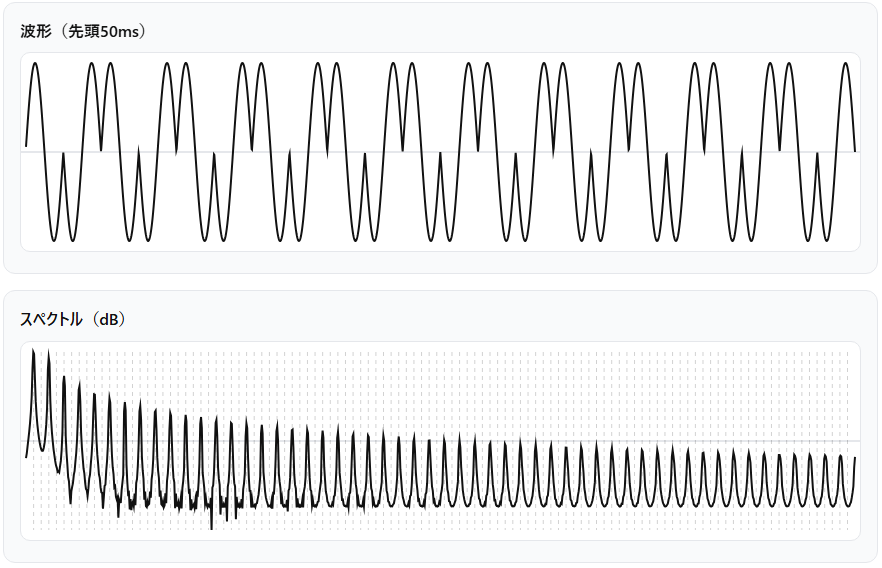
なぜ奇数成分しか出ないのかがとても気になったのだけど、ChatGPT 5.1 Thinkingによると、どうも「半波対称性」というものらしい。
- 前半（0.0～0.5）： \( y(\text{ph}) = \text{sin}(4 \pi \text{ph}) \)
- 前半（0.5～1.0）： \( y(\text{ph}) = -\text{sin}(4 \pi \text{ph}) \)
\( y( \text{ph} +0.5) = -y( \text{ph}) \)
が成り立つことが原因だとか……。後半が前半の完全なマイナスコピーなので、偶数次の「同じ向き」の成分が打ち消し合うのだとか。 半波対称性についてググると「モータ研究者の技術解説」様というところの解説が出てきたので、後々勉強させていただければ……。007 でその波形を聞くことができるようにしてみた。
off
をいじれば後半の位相を任意にいじくれる。180度の状態では、くぐもった矩形波に近い。興味のある人は、生の矩形波
と聞き比べてみてください。後はSunoAIでVaporwaveとかを作ったりしながら過ごしていました。まだSunoAI周りは音楽ページにアップしていない。キュレーションしてさっさとやってしまいたいのだけど～（いつも腰が重い）
2025年12月3日
雑記
もしかすると、思っていたより『裏世界ピクニック』がかなり、相当好きかもしれん……。コンセプトに惹かれて原作1巻を読んで、それからはコミックスで追っていたのだけど、待ちきれずにKindleで原作の方を買って読んでいます。 特に9巻、かなり好きかも。8巻から出てくる実践魔術師の辻さんが活躍するのですが、すげえいい。やっぱり魔術ってかっこいいな～。 『モダンマジック』 で見たやつだ！ ＞小五芒星追儺儀式（LBRP）
『ソラリス』みの出てきた裏世界に対して、大規模言語モデルでアプローチするというアイデアもウフフ。 あとちょっと『禍話』要素もあったニャ。
大規模言語モデルと言えば、動画目当てで導入したSuperGrok、実はエロ会話がかなり得意。 すぐ突っぱねる（どころかモデレータ削除でこっちのメッセージまで削除する）ChatGPTに比べるとかなり寛容で、ロリとかでも書けちゃう。 最近のおかずです。動画も復活してくれよ～？（本国のレギュレーションが厳しいだろうからしょうがないかなあ）
ゆる言語学ラジオの 「フィリピンの賭博」と「ジャンクション」に共通点を見つけました。（※YouTube） 回を視聴する。「プロジェクション」（＝自分の内的な表象を外界に投射し、物理世界と心理世界を重ね合わせる心の働き）の話が面白かった。 『幻想再帰のアリュージョニスト』 の『邪視』って、もしかしてこれ？
妹のために台湾みやげのパイナップルケーキを送りました。
2025年12月1日
JSS Projectをちょっと更新
007は将来「こういうの作れたらいいな～」みたいなVSTiの雛型なので推してます。可能なのかはわからないけど……。外付けSSD第二号が届いたので、そろそろStable Diffusion周りのデータはそちらに移行して、 ComfyUIとかz-imageとかwan2.2とか色々試してみたいなあ～と思いつつあります（多分wan2.2は動かないなあ……メモリ増設とか可能なのかしら） と同時に、空いたところに購入したAbleton Liveを突っ込んでいくと。
Max9でやってみたいことはまあ色々あるので、来年はそれとLeanを触っていく流れなのではないか。どこまで出来るかわからないけど。
仕事があわただしくて若干不機嫌気味です。まあしょうがない。
2025年11月30日
旅行記
11月20日から初めての海外旅行として友人と台湾に行ってきました。旅行記をまとめます。台北1日目：移動と夜市と西門町
移動
朝6時半起床、7時出発。前日ほぼ2時間睡眠だったので眠すぎる。これは忙しいとかではなく単純に寝るのが下手なんです。 っていうか峠なんかもう雪降ってるじゃないか。{kind=link}
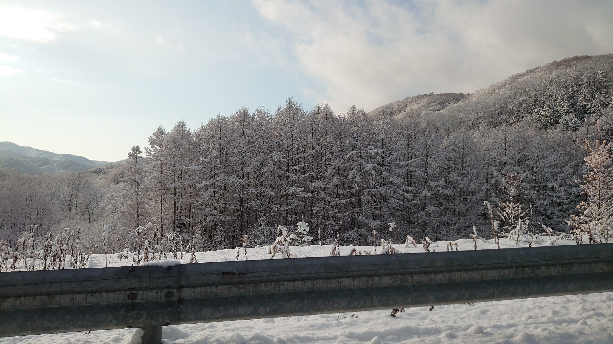
モンエナを流し込みながら新千歳空港へ。腎臓がフル稼働した結果、台北までの道中で何度もトイレにも寄るはめになった。
新千歳からさらに4時間かけて桃園空港へ。 機内食はチキンが「雞肉蛋飯」（親子丼っぽいご飯）、ポークが豚カツレツのデミグラスソース。私はチキン、友人はポークにした。空き腹に染み渡る……美味すぎる。 飛行機のWi-Fiは「インターネット」ではなく、有料コンテンツ視聴権という感じだったので、音楽を聴いたり、友人と中国語をシミュレーションしつつぼんやり過ごす。
到着予定時刻が「3時間後」になっていたので「意外と東京行くのとあまり変わらないのかな？」と思ったら、 台湾とは1時間の時差があるので、実質フライトは4時間だった。 相対性理論的に言えば、西に移動するとはつまり微小に過去へとタイムスリップし続けることなのかもしれない（？）
桃園空港に到着
{kind=link}
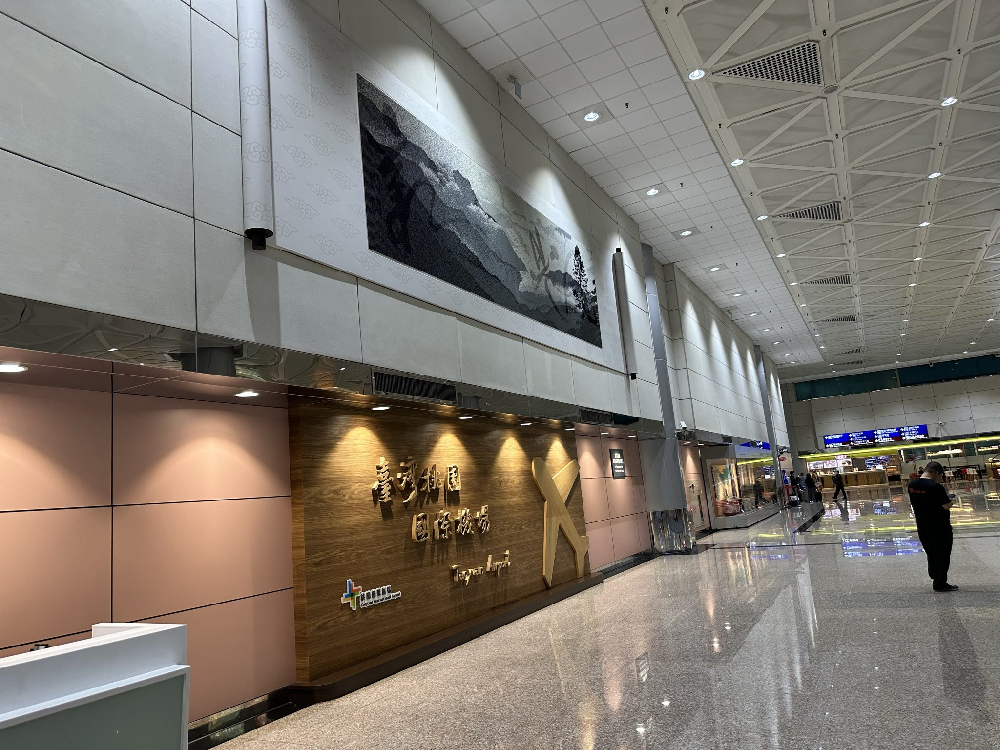
ウオオオ緊張してきた！ Duolingoで付け焼き刃の中国語を頭の中で思い出しまくる。
そういえば “duo” って、ラテン語っぽく「2」と思えば「二言語」、中国語っぽくduo2（多）だと思えば「多言語」だよな！？ そういえばオートマトンとかオートマタとか言うけど、-onってギリシャ語の語尾っぽさあるよな！？ ……などと脱線。 実際、From Ancient Greek "αὐτόματον" (autómaton), neuter of "αὐτόματος" (autómatos, “self moving, self willed”). とのことなので（Wiktionary）、当たってるやんけ。嬉しい。 automataは複数形なのだとか。あれか、melonがmelaになるやつか。
気持ちが逸れている。そんな場合ではない。こんなんでちゃんと海外でやっていけるのか！？
……と不安になるも、空港の雰囲気を見て「意外となんとかなりそう、むしろ東京よりプレッシャー少ないかも？」と少し安心するなど（なんでだろう？）。 スキンヘッドのナイスミドルなヨーロピアンが、フェンスをまたいで入国審査の列を抜かしながら横入りしていった。 係員さんはやや呆れ顔だったように見えたが、彼には彼なりに何か事情があったのかもしれない（乗り継ぎがギリギリとか、家族が先に並んでいたとか）。 旅は色々だ……（実際、私も帰りの空港でミスをやらかすことになる）
入国審査自体は、パスポート提示＋顔写真と指紋撮影だけで、一言も交わさず終了。あっさり入国。 「3泊4日ってなんて言ったらいいの！？」と戦々恐々としていたので拍子抜け。オンライン入国カードのおかげだろうか。 「我的行李箱在哪里！？」と若干不安になりつつターンテーブルを眺めるが、時間差でちゃんと荷物とも再会できた。
桃園から台北へ、そして夜市
JTBの現地スタッフさんにガイドしてもらい、桃園から台北市内へと送迎してもらう。車で40分ほどでホテルに到着、一息つく。よし、という気持ちになってきたので外出。
{kind=link}
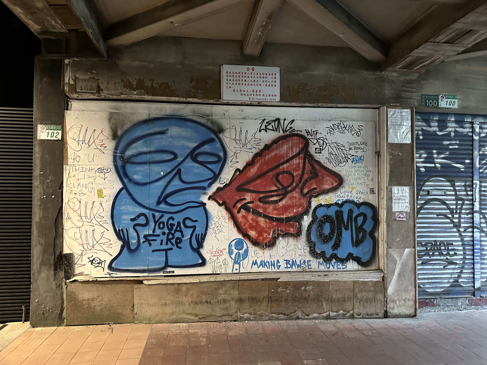
歩きながら見つけた落書き。ヨガファイア……。
そのまま、ホテル近くの夜市で夕食。友人はやる気満々だったのに、いざ入って注文しようとなるとまごまごし始める。 出かける前は「もうここからは笑顔とジェスチャーで行こう！」と言ってたのに……。
{kind=link}
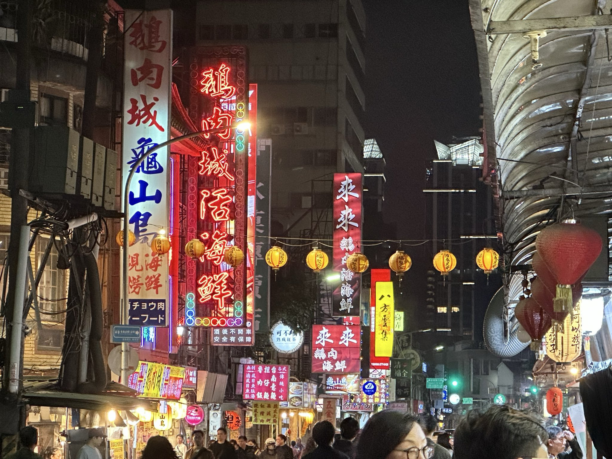
{kind=link}
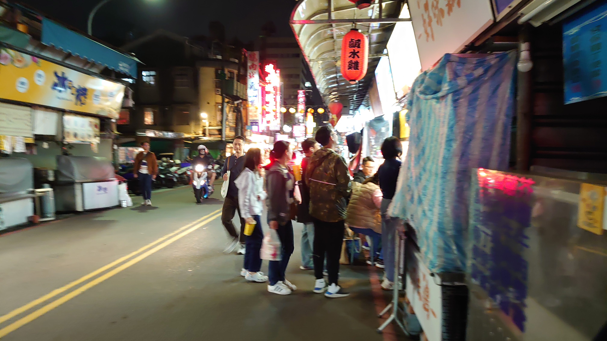
- 台湾ビール：いきなりサーブされたのでサービスかと思ったが、多分こちらの意思疎通ミスで注文が通っていたっぽい。 でも普通においしいし大満足。あとで調べると、18天台灣生啤酒（ONLY 18DAYS BEER）という、 出荷後18日しか賞味期限のない珍しいものだったようだ。
- 牛肉炒飯：空芯菜入り。鹽というよりは牛肉の脂や米の旨みで味がしっかり構築されている印象。美味すぎ。
- 揚げ臭豆腐：「美味い」しか言っていない気がするがこれも美味しかった。えびせん入り。チリソースがついていた。 噛むとほかほかしていて口の中が熱くなる。思っていたほど臭わない。冷めてくると少しだけ酸味が出てくる。 一方、煮込み臭豆腐の屋台の前を通ると「スーパーで買ったホルモンを焼いたときの生臭い匂い」が立ちこめていた。 ただ、自分はそういうホルモンはわりと食べ慣れているので、きっとこれもいける気がする。
- えびの葱油炒め：これは優勝。タマネギ、ピーマン、ベビーコーン、ナルト、油条（揚げパン）など、いろんな具材と一緒に炒めてある。 ソースはバターとレモンの味も。特に油条がソースを吸っていて、「サクじゅわ」な食感で最高だった。

{kind=link}
西門町をぶらぶら
夜市のあとMRTで西門町へ移動。BLEACHの広告がでかでかと出ていて、謎にテンションが上がる。{kind=link}
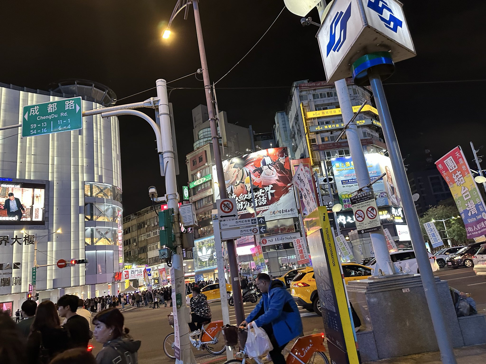
{kind=link}
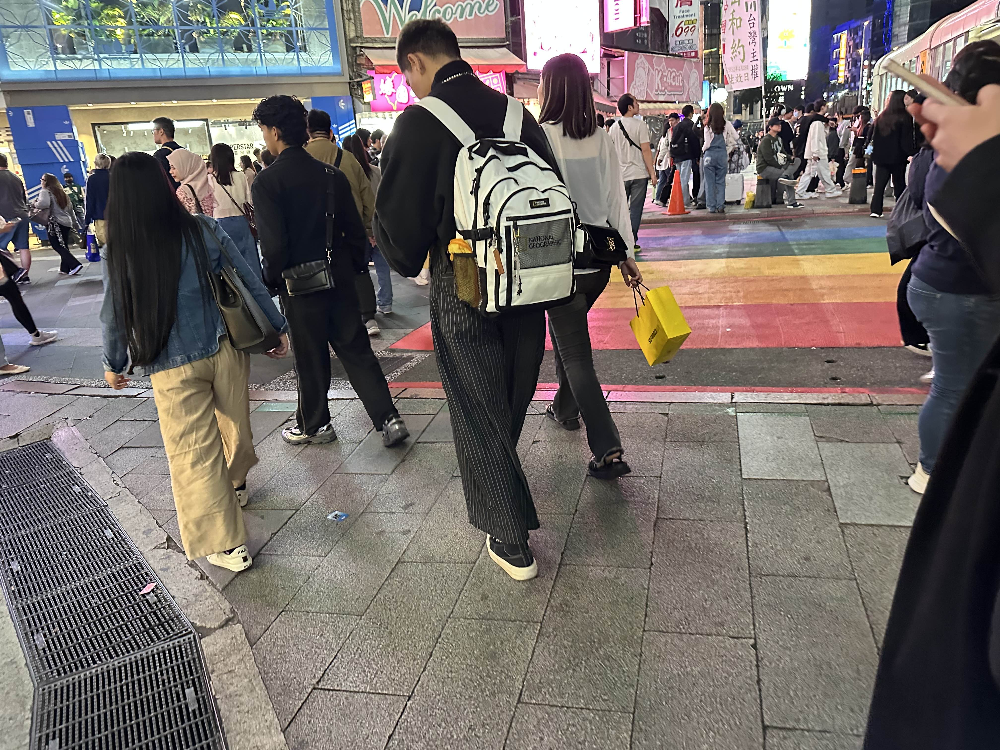
{kind=link}
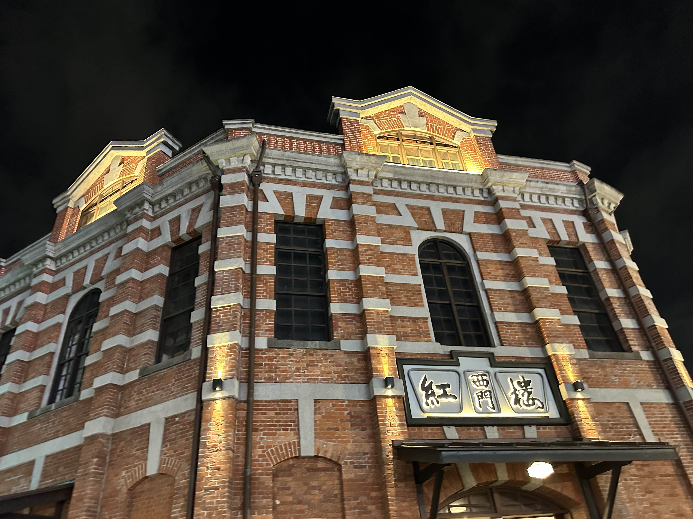
レッドハウスや「6号彩虹」、裏手の少しゲイバーっぽい雰囲気の店を眺めつつ、 『檸厚 暴打檸檬茶』でパクチーレモンティーを注文。複雑な味だが、なかなか悪くない組み合わせ。 LGBTフレンドリーさと、台湾の独立性を主張する空気感が同居していて、 「若者らしさってこういうことなのかもなあ」と感銘というか、少し羨ましさを覚える。 翻って我が国の政治のことについても色々考えたりしたが、まあ今書くことでもないか。
{kind=link}
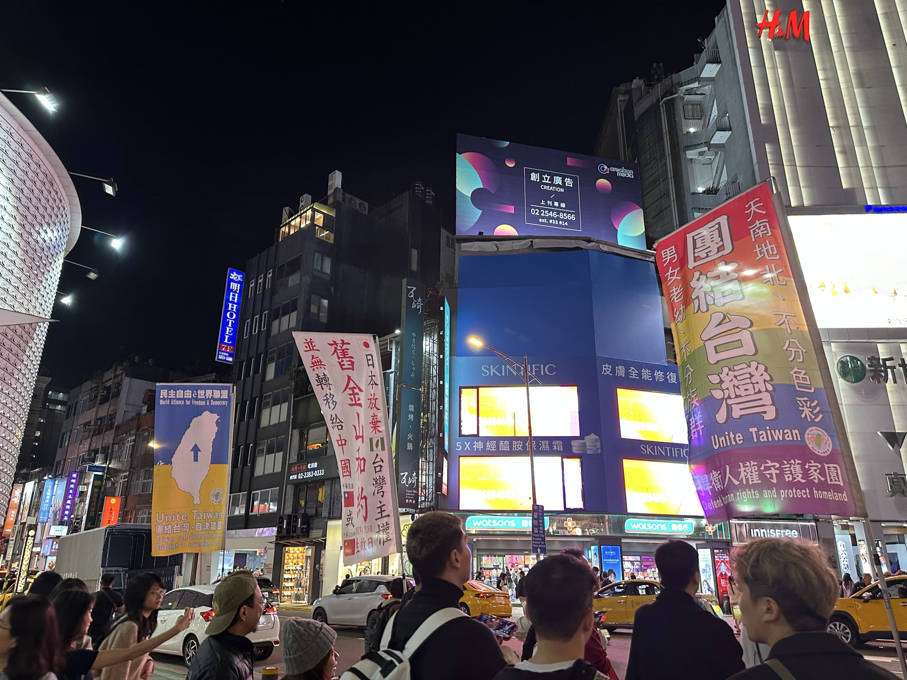
{kind=link}
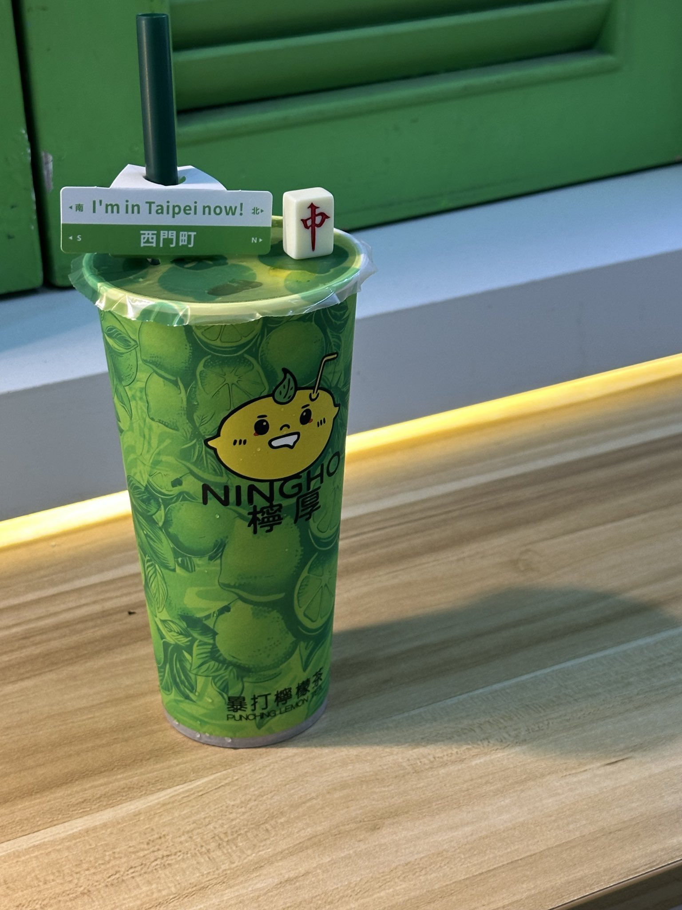
このあたりで体力の限界が来て、足が棒のようになったのでホテルへ退散。 ホテルではウェルカムドリンクとしてカクテルのサービスがあるとのことで、ありがたくいただく。
{kind=link}
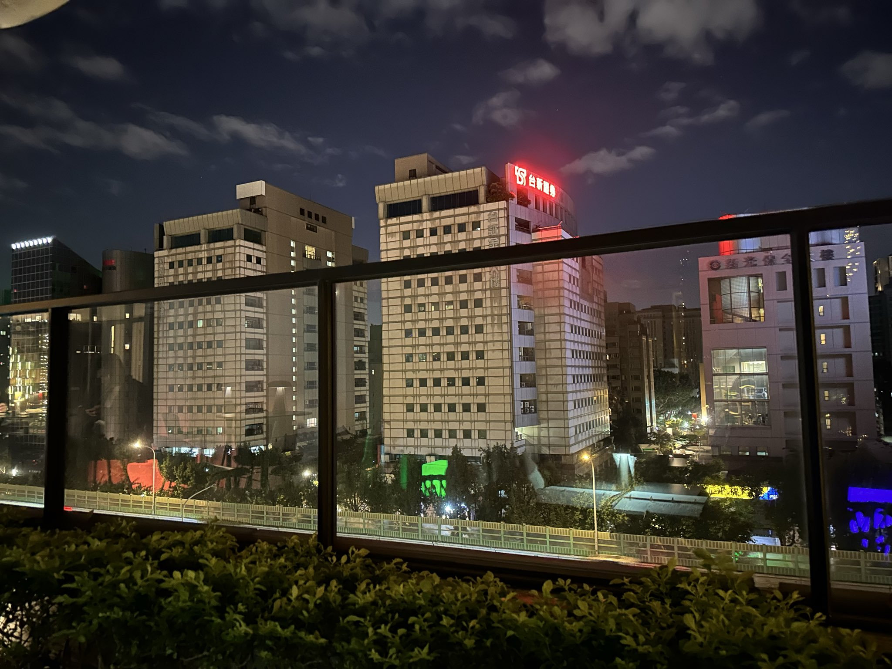
{kind=link}
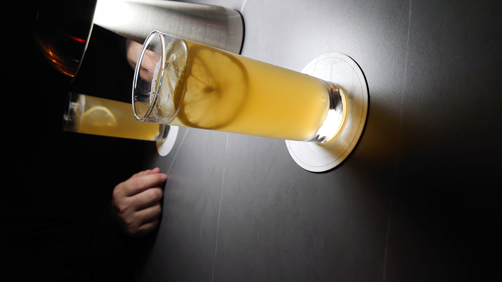
台湾ウイスキーのカクテルとのこと。レモンと紫蘇とウイスキーの味が混ざり合って、おいしい。気づけばけっこう酔っぱらってしまう。 普段全然飲まないのでフラフラだ。
台北2日目：中正記念堂と翡翠市場と迪化街
朝7時半ごろ起床。朝食をいただく。パン(クロワッサンとかフランスパンとかアップルパイ)、アラカルトのハムとかチーズ、メインのポークリブやサーモンハラスのソテー、オムレットやサニーサイドアップ、どれも美味しい！ サーモンハラスにはあまりみたことない野菜のピクルスが。赤いパリパリしたものはおそらくビーツだったのだと思う（このあと屋台でも見かけた気がする）。
外出
MRTで移動するために最寄りの松山南京駅へ。胡乱な日本人四人組がいた。「だからそれってタロットよりも効くの？」
「浮かび上がってくる素材を料理するんです、そこから術士の腕前が物を言う」
「そういう感じじゃなかったら商売として成り立たないでしょ？」
な、なんだよこの会話。ヒューム値が低いというか現実感がないというか……。 二十代くらいと思われる彼らは横並びで改札へと向かっていった。彼らはこれから霊能力バトルでもするのだろうか？ 澤村伊智の世界観？ 常識的に考えると、ビジネスか何かのための占いか何かだろうか……？ 台北ってひょっとして呪術都市なのか……？ （そんなばかな、とは思いつつ、そういえば仏教系の宗教施設が滞在している周りにも近い気がする）
中正記念堂
{kind=link}
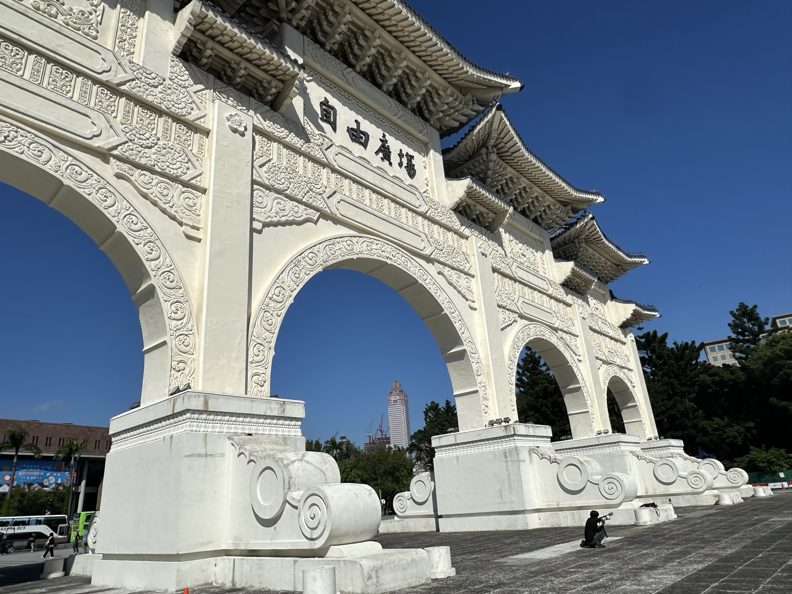
松山新店線に乗り、中正記念堂見る。建物すごい。門がまず度肝を抜くレベルで大きかった。 上の組み物の部分なんか、遠目に見ると支点が細く見えるし張りだしとかちょっと心配にすら見えちゃうが、おそらく根元で四点をしっかり支えているのだろう。
{kind=link}
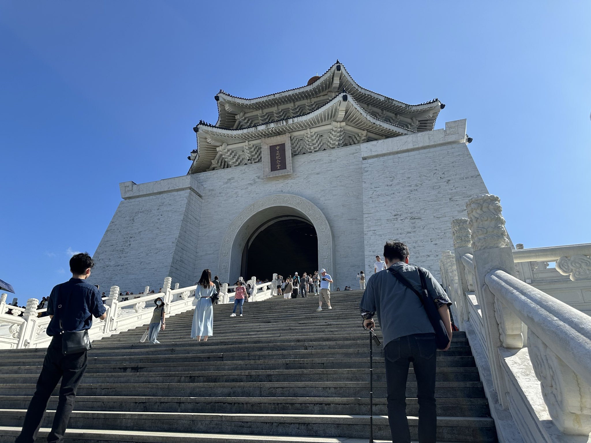
庭園や戯劇場などを横目に、広い広場を抜け、階段を登る。直射日光と、純白の石材で目が眩みそうだ。
{kind=link}
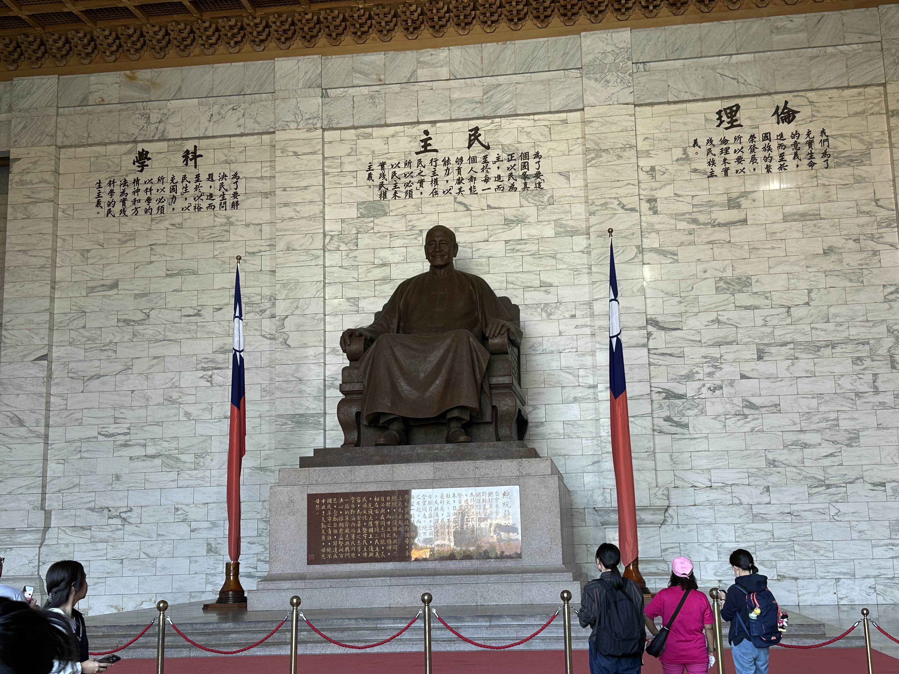
蒋介石像にご対面。彼はアルカイックスマイルで台北の街を見ていた。 ちょうど11:00くらいで、1時間おきに儀仗兵の交替式を見られるとのことだったので階段の上から観覧させていただくことに。 一糸乱れない動き、銃剣を空中でくるくる回したり……。うーんすごいなあ。
巨大な蒋介石像の置いてある部屋はこれまたでかい。科学、倫理、民主、という三つの標語が書いてあり、 側面には「人生は次の人生を育むことと宇宙を作るためにある」「生活の目的は人類全体の生活を増進するためにある」みたいな雰囲気の標語が。 空間としてもやたら大空間、柱もないので、上部の組み物はさておき躯体自体は木造ではまずありえない。SRC造か何かか。
{kind=link}
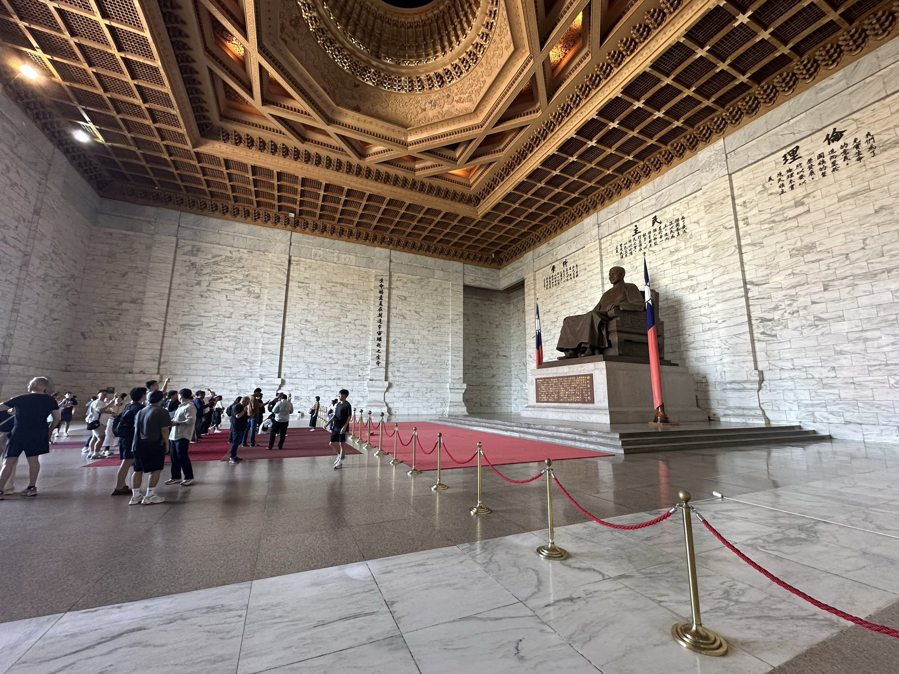
{kind=link}
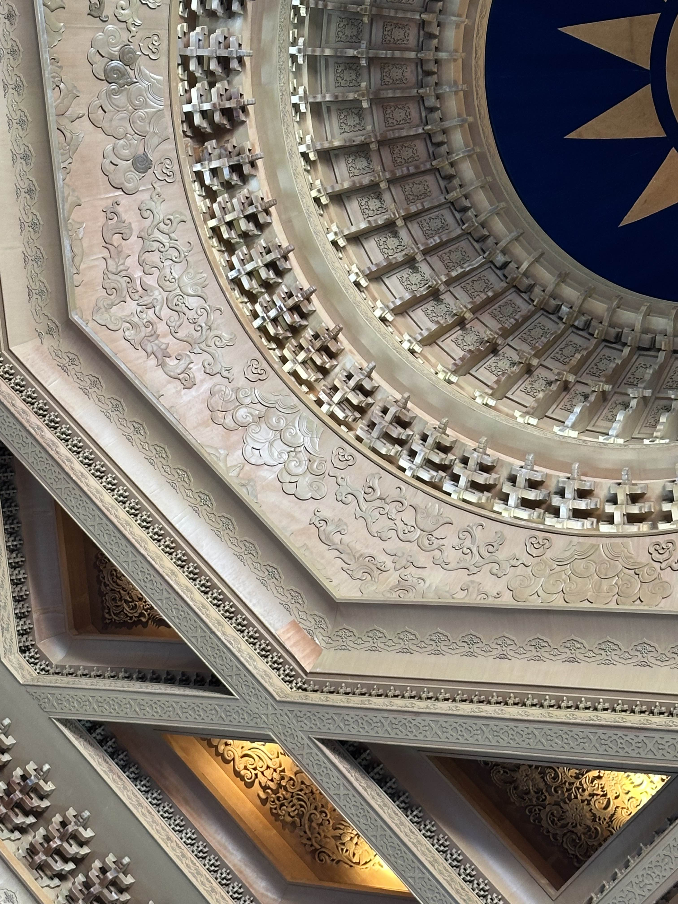
見事すぎる……。

階段で降りると、内部は美術館になっているようだ。孩子們の描いた美術の展示があり、ついつい夢中で見てしまう。絵が可愛い！
{kind=link}
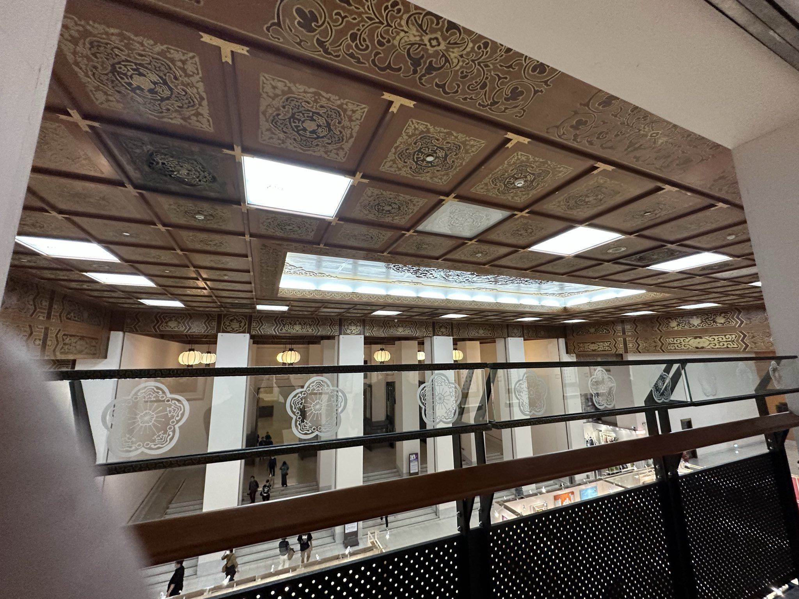
建物が見事だ……。一階にお土産売り場があったので購入。タイリング好きなので狙っていたマジョリカタイルと、絵葉書と、ブレスレット二本を購入。
{kind=link}
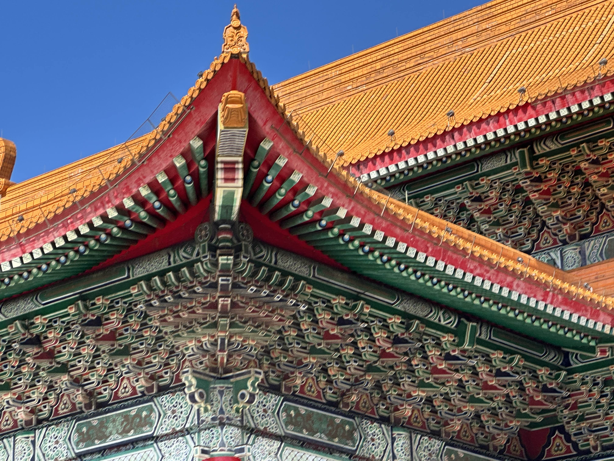
横の戯劇場の組み物。これもすげえ～。
翡翠市場へ
大安森林公園へ移動。友人が改札から脱出不能になる（悠遊カードを取るのが早かったせいかゲートが閉まってしまい、しかし外にいる判定になったみたい）。 浜松町のモノレールからの乗り換えでよくあるやつ〜！{kind=link}
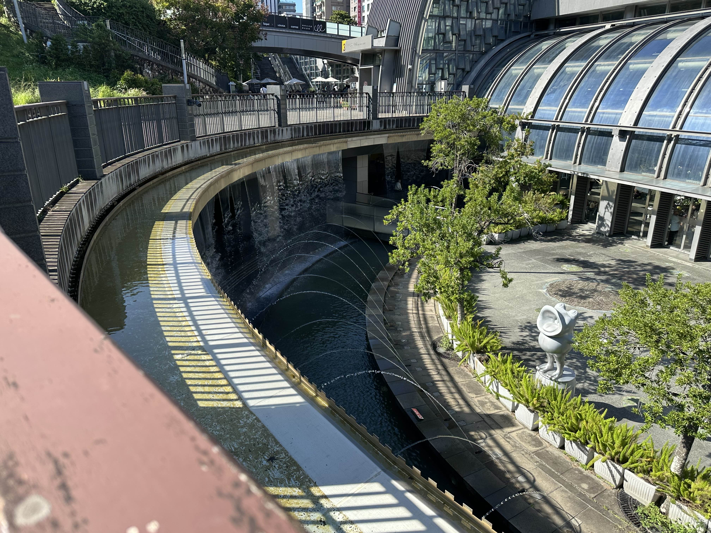
徒歩で移動。交差点に止まった車のおじさんが菱角を売っていた。
{kind=link}
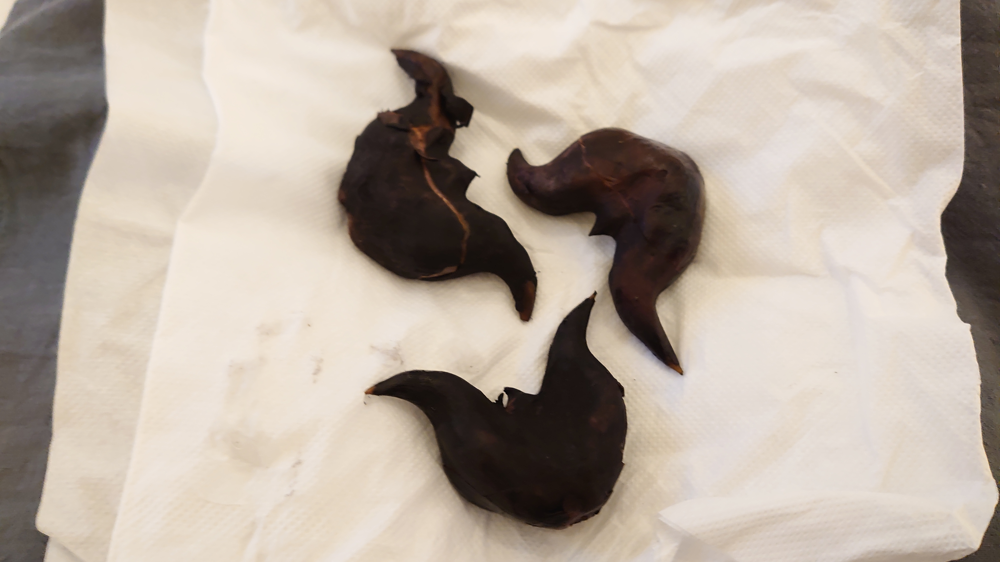
友人が気になっていたらしく、買ってみる。真っ黒な殻が鋭く尖っていて、「これを撒くのがマキビシか〜！」と納得。 「日本人？」と聞かれて、「對！」と返事。これはほくほくだ。栗と芋の間みたいな感じで香りが良い。残りはホテルに持って帰って食べた。
Jianguo Holiday Flower Marketを通り抜ける。そこまでずっと直射日光だったので、日陰がありがたい。 かなり規模の多い園芸用品売り場で、大変賑わっている。なんと庭木まで売っている。どうやって持って帰るのだろう？ 犬を連れている人が多い。酸梅湯を飲む。地元な中華料理店でも飲めるのだけど、ほとんど同じ味だ！ でも色合いはこちらの方が紫っぽい。
そのままJade Marketへ。すごい綺麗な石や工芸品がいっぱい。翡翠だけかと思ったら、瑪瑙や紫水晶も。角煮とか寿司みたいに加工された石が可愛らしい。 だが価格交渉とかまともに出来る感じがしないのでウィンドウショッピングである。
{kind=link}
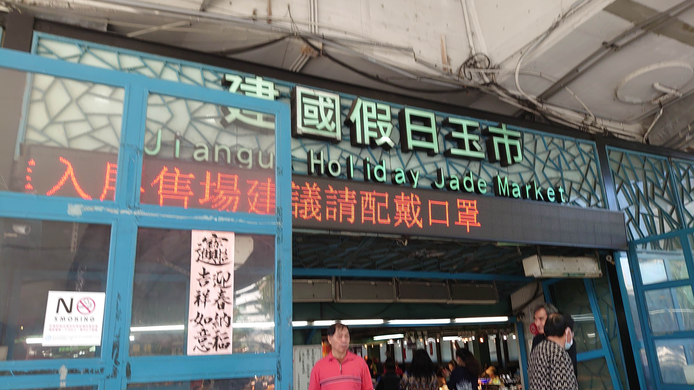
{kind=link}
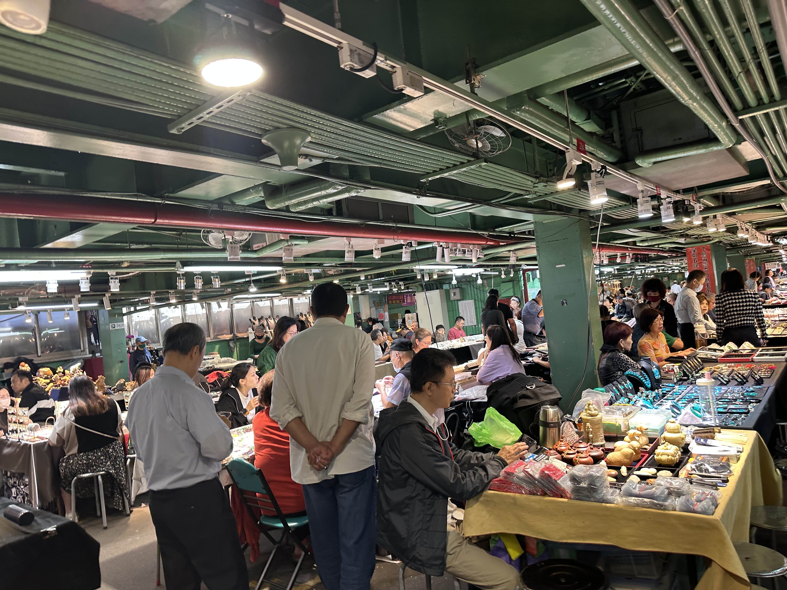
迪化街へ
{kind=link}
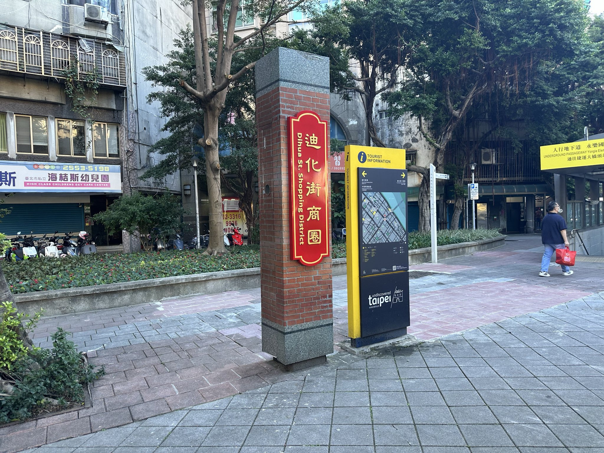
大橋頭へ移動。この辺(12000歩あたり)から我的腳底死了……。 だが家族への（あと自分たち向けのｗ）お土産が欲しくて迪化街を彷徨い歩く。ここは問屋街のようなところで、地元の人も観光客もたくさん訪れるようだ。 狙っていた飲食店がなんと予約必須で食事できず。というか日曜だからとてつもなく人が多かった。 そんな中をバイクやら自転車やらが通り抜けるので、これはまさにカオス。 この日は20時までご飯を食べなかった。ま、まあ前日食べ過ぎだったしええやろ……。
足の裏の痛みはかなり極限に達しており、一歩一歩が青竹踏みみたいになってしまって友人に心配されたり呆れられたり（扁平足ですまぬ）しつつも頑張る。
迪化街では色んなお土産を購入。店を4つか5つくらい見て、スパイス(雞肉用)、紅茶、凍頂烏龍茶、生姜キャンディ、パイナップルケーキ(ジュースとゼリーをプレゼントしてくれた)、 エコバッグとグラス(嵌め込みガラス入り！)、辛いスナック二つ、石虎のタイル、甘草、カラスミ……カラスミは自分たち向け。多分大根味噌漬けとチーズあたりと組み合わせるとおいしそう。
{kind=link}
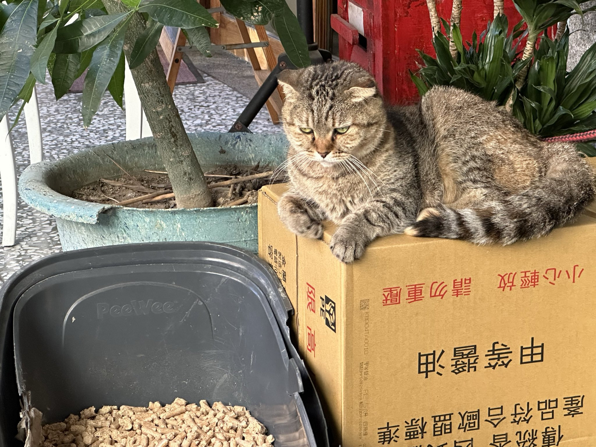
迪化街キャット。
父から頼まれていた工芸茶を売っているはずの迪化街内の店が、なんと日曜早仕舞い！ 代わりの店がなかなか見つからず検索すると、迪化街のかなり北の高架そばの店 （新點子茶舖） にあるとのことで移動。 16:20くらいだったのだが閉店が17:00だったのでちょっと焦って（這々の態になりつつw）、移動。
到着。つていうかここ、乗り込んだ大橋頭站の地下から出てすぐ向かいの店じゃん！ 16:40着。工芸茶2つ、お茶2つ、瓶詰め調味料三つ……。客はほとんど日本人女性である。 売り込みが上手でついつい瓶詰めを大量に買ってしまったが、そもそも試食が美味しすぎた（特にカラスミ油漬け……）のでこれはもう購入待ったなし。 「pasta」とのことだったけど、普通にご飯にかけてもおいしいんじゃ？（……なおこの瓶詰め類が後に波紋を呼ぶことに……）
ホテルで休憩後、再度夜市へ
ボロボロになりながらホテルに直帰。この時点で20,000歩！ 新記録じゃない？ もう死了……。19:10くらいまでお風呂で足の裏を労り、結局前の日に行った遼寧街夜市に再度乗り込む。牛肉麵をとうとういただく。 前日とは異なり、ちゃんと台湾らしく紙に書いての注文成功。 微辣、スネ肉のみならずハチノスやナンコツまで載っており、これはどう考えても美味すぎる。足の痛さもしばし忘れてひたすら啜る。
{kind=link}
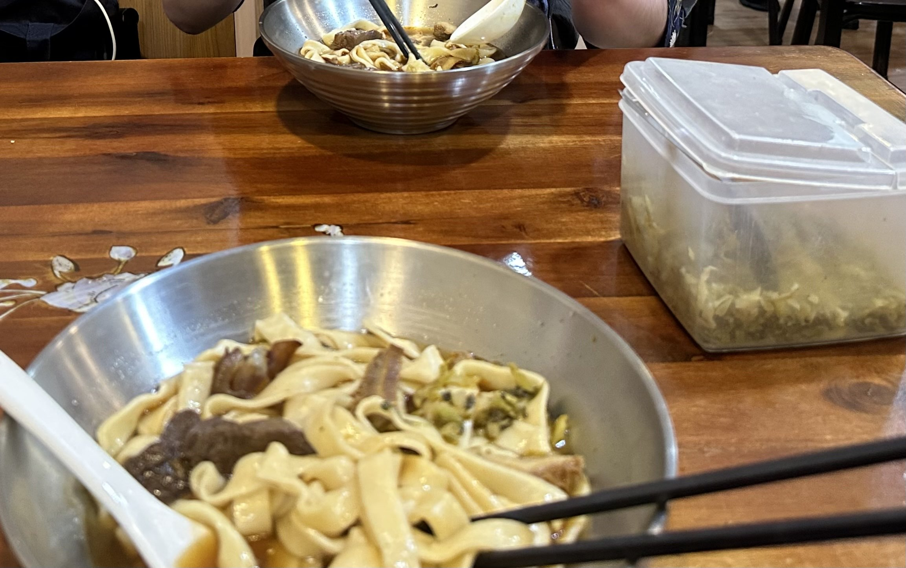
そのあと、北投紅茶のお店に行き、外带（テイクアウト）する。この時、「ストロー持ったかい！？」と他の列のおじさんたちが聞いてくれた。 言葉もわからん我々にこんなにいいの？と言うくらい優しい……ちゃんと持っているのをアピールしつつ「謝謝！」とお礼。
{kind=link}
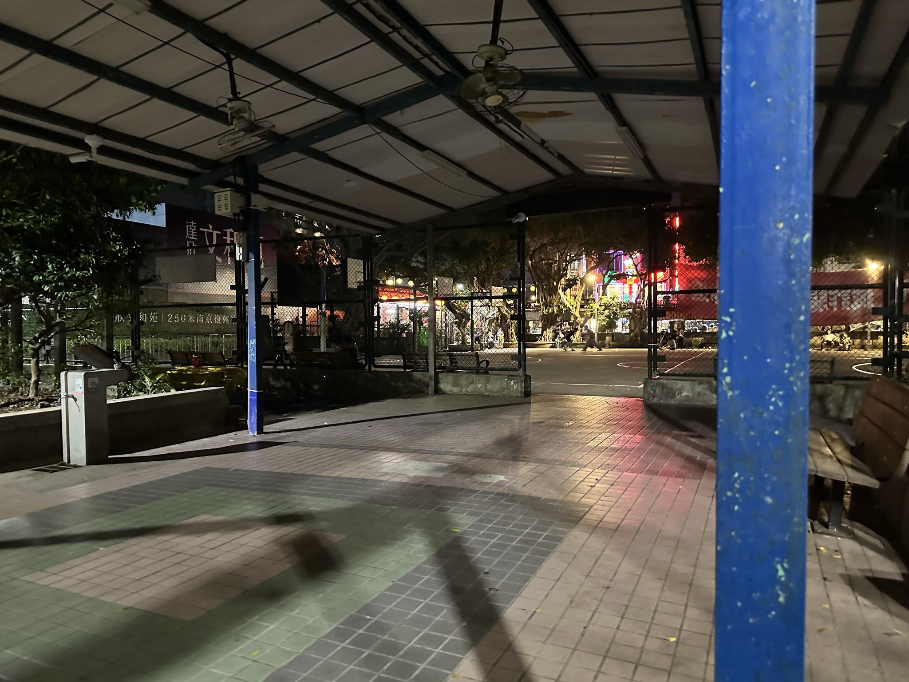
{kind=link}
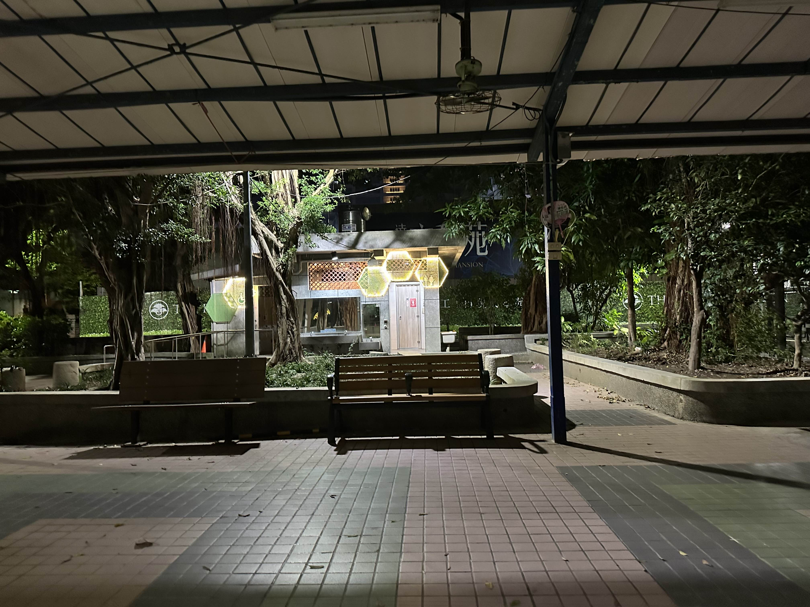
夜の朱崙公園に座って紅茶を……。思ったより甘く、足に染み渡る……。夜風が涼しい。 小型犬（ペキニーズ？）を散歩させる人、隣の敷地では子供達がバスケットボール、そしてそばでは女性が猫ちゃんにキャットフードをあげている。 あら〜黒猫ちゃん💕 かと思いきや、胸からお腹が綺麗に白い。写真を撮ろうとするとイカ耳をされてしまい、對不起……という気持ちにｗ
{kind=link}
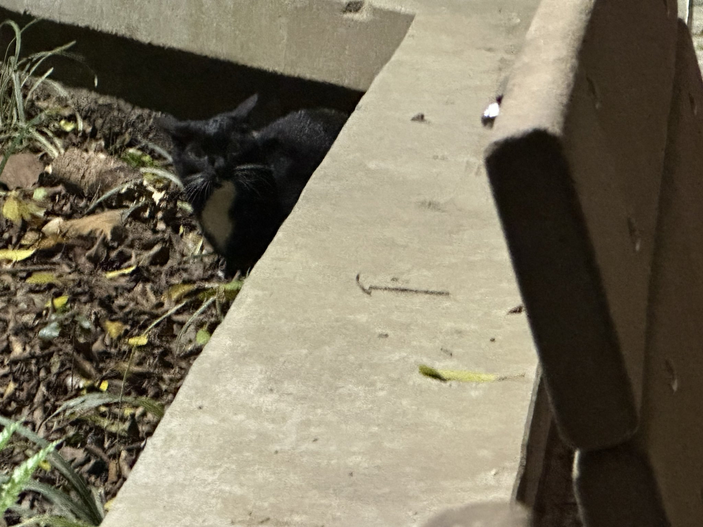
台北にいた間、一番落ち着いたのがこの瞬間だったと思う。気分が良くなり、足の裏をいたわりつつ、ゆっくりと帰宅。24,000歩になった。あすけんいわく、これだけで1184kcalだとか。頑張ったなぁ。
部屋で昼頃買った菱の実を食べる。角みたいになっているところを持って、外側に折り開くようにすると、綺麗に剥ける。 友人は喫ワイン。お土産の整理。テレビを点けると、難しい漢字クロスワードクイズ(部首がヒントになるもの)、あと柯南(名探偵コナン)の劇場版(探偵たちのレクイエム)をやっている。 なんとなくつけつつ、今日は早めに寝るつもり……(˘ω˘)
そうそう、台湾ドルが足りなくなってきているので、明日は両替しないと……。
台北3日目：士林、台北101
前日のホテル朝食が多すぎたので、スマホからのオーダーでヨーグルトやパンなど減らしたのだが、減らずｗ まあ美味しいのでいいか……！士林、閉まっていた故宮博物院
淡水線に乗り込んで士林に移動。淡水線、唭哩岸という地名に大興奮して 「出おったぞ！」と騒ぐ。(某コンテンツの激しいネタバレなので分かる人だけ分かってくださいｗ){kind=link}
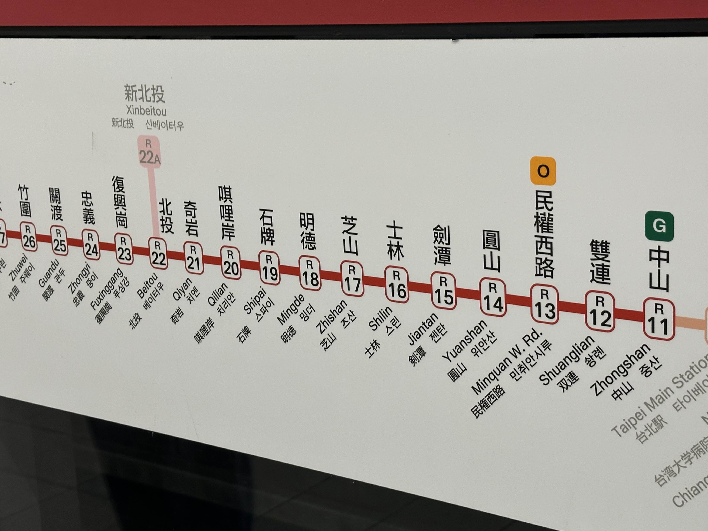
國泰世華銀行でキャッシング。駅を出ると鳩が多い。バスがよくわからないので調べる。
{kind=link}
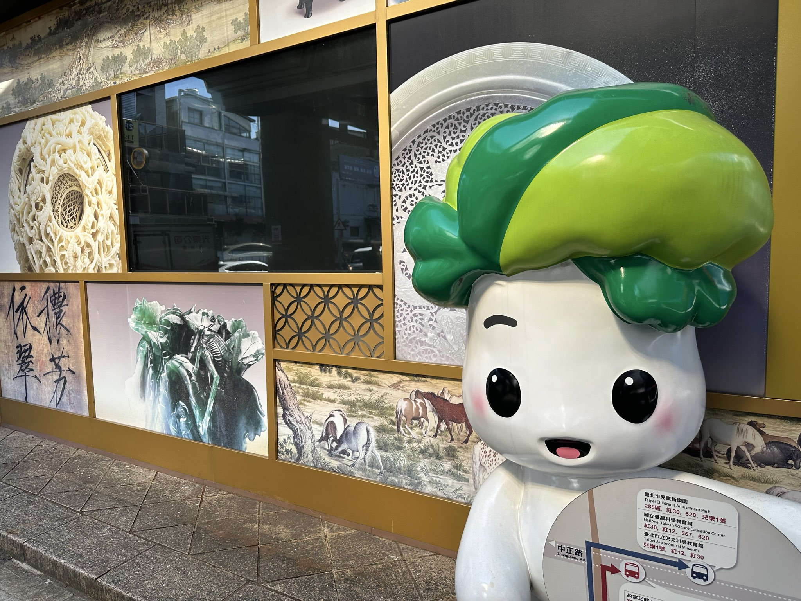
マスコットが駅でお出迎えしていた。故宮博物院にバス移動。
{kind=link}
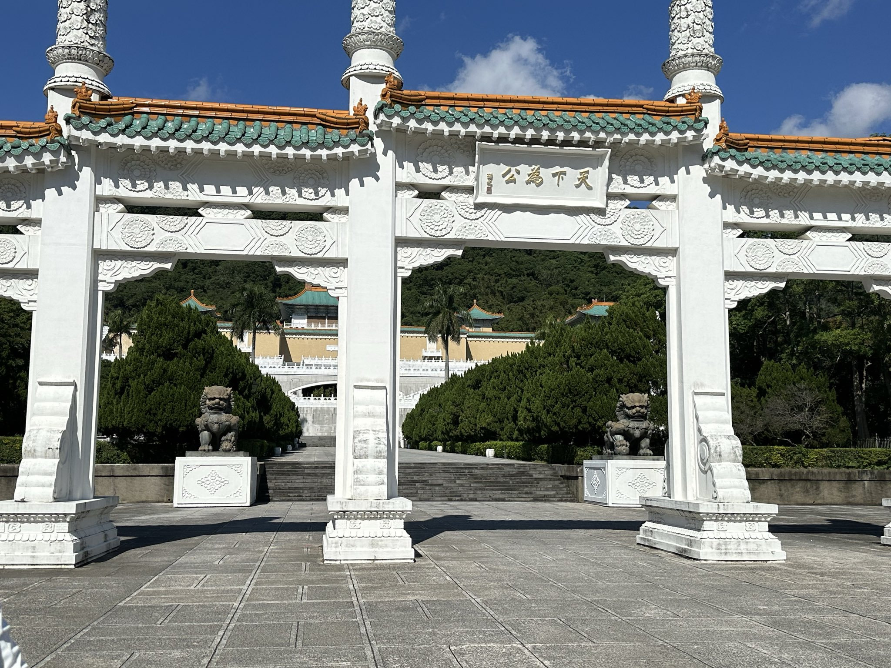
がらがら。「ま、まさか……」嫌な予感がして調べると、案の定『月曜日は休み』とのこと。やっちまったァー！
二人で爆笑していたが、やがて友人がガチ凹みして「もっと調べれば良かった……ごめん……」。 私は「いやー私ももっと確認しておけば良かった……こっちこそごめん……」
しかし、二人で暗くなってももう仕方がない。 実際、後続にも結構日本人がいて、友人は遠くに見える彼らを見ながら「おっ、アホづら並べとるぞこいつらw」と（自分たちの状況を脇に置いて）嘲笑。 暴言やめなさい！ だいたいそのアホづらの先頭は我々じゃん……。
まあ一応、ということで入り口まで登る。中正祈念堂の時にも思ったやつだけど、真っ白い石材+日差しで流石に暑すぎる！ たまらず日傘利用。それでも建物外観や、登った上からの風景だけでも面白い！
{kind=link}
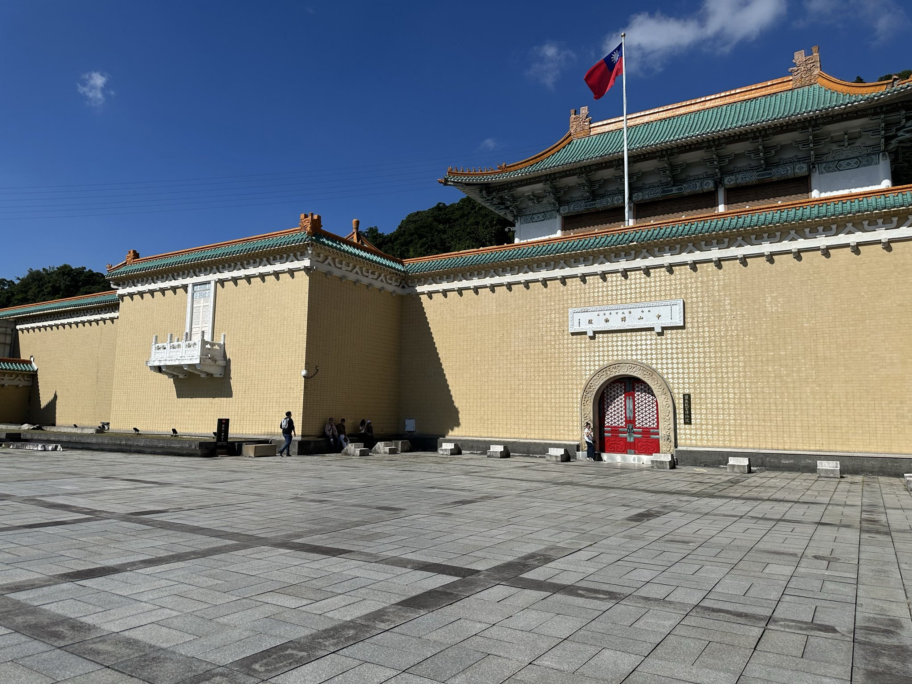
結構人がいた。散歩コースとかでもあるのかもしれない。
次はぜひ入りたいものです……(角煮とか白菜、あと何重かになった球形彫刻とかを見たかったのですよ……)
{kind=link}
マジであっちい。 29度とのことだったが、体感ではもっと暑かった。
これはもうドンマイである。捷運士林站までバスで戻り、お店で豆花を食べる。
{kind=link}
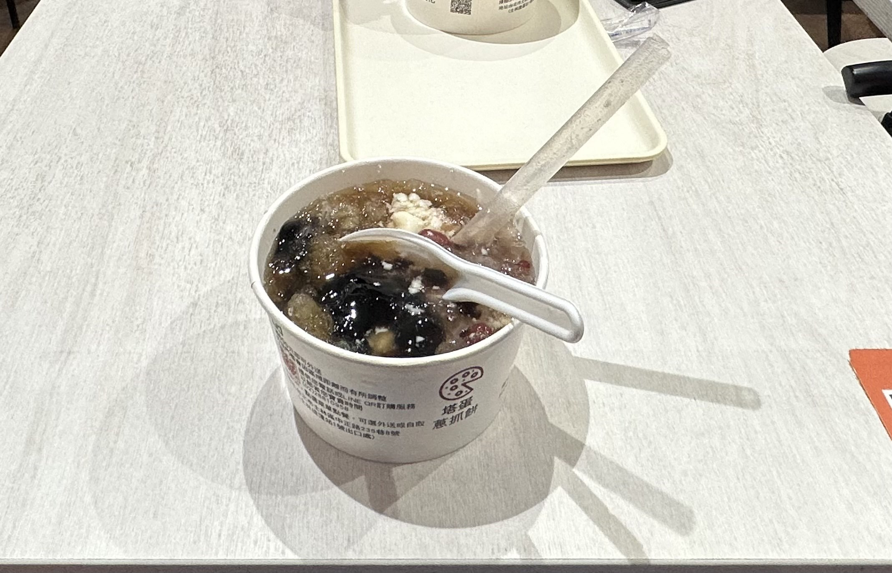
注文システムがよくわからなかった。 机のシステムから入力して、発行された画面を店員さんに見せればOKだったようだ。 テーブルを先に選び、その上でメニューを作り、テーブルの数字を客が店員さんに口頭で教える、という意味では夜市のシステムと同じだ。 銀耳（キクラゲ）と仙草、赤豆入りにした。友人は芋餅入り。それ、なんて名前だったの！？（芋圓 yùyuán と言うそうです）
台北101
{kind=link}
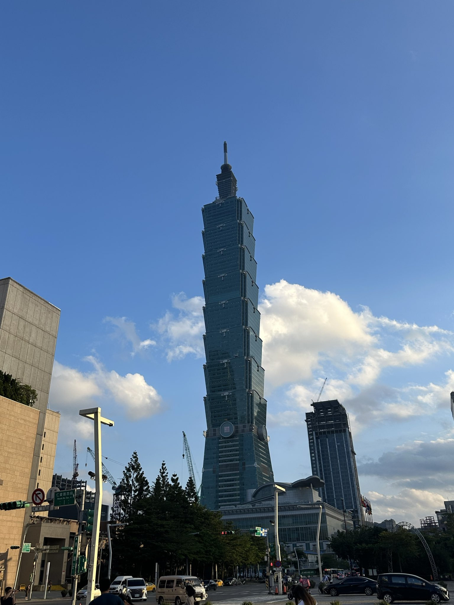
台北101へ。6階展望台まで上がり、そこから90階までエレベータで上昇。スカイツリーとかJRタワーのやーつを思い出す。耳が！
{kind=link}
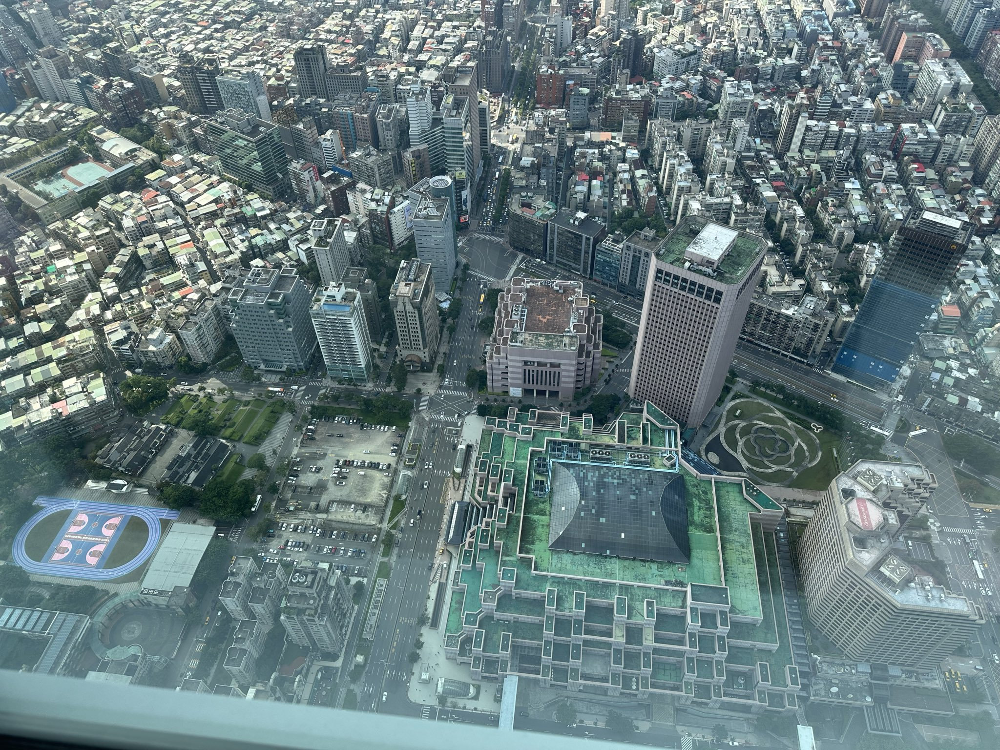
そして上は怖い。窓側にいくと、くらっとするような、ふわっとするような……！？ 中を何周か。
{kind=link}
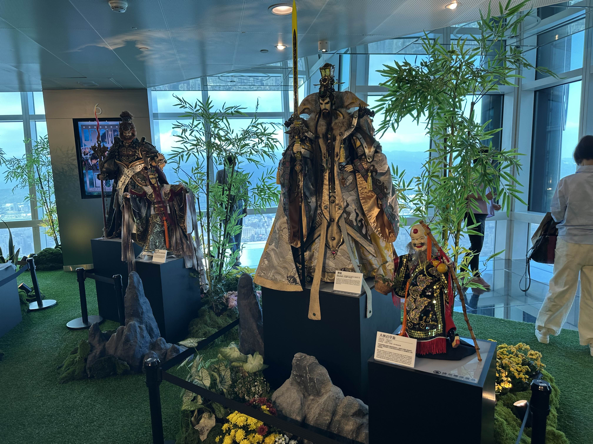
天空の劉備。
{kind=link}
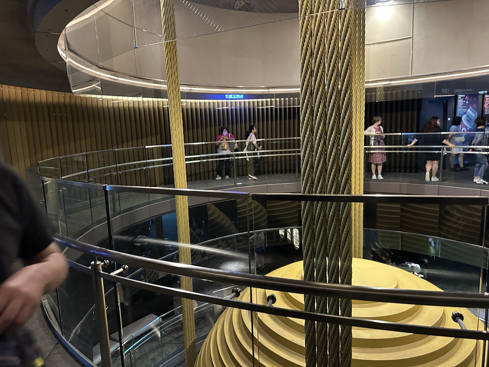
{kind=link}
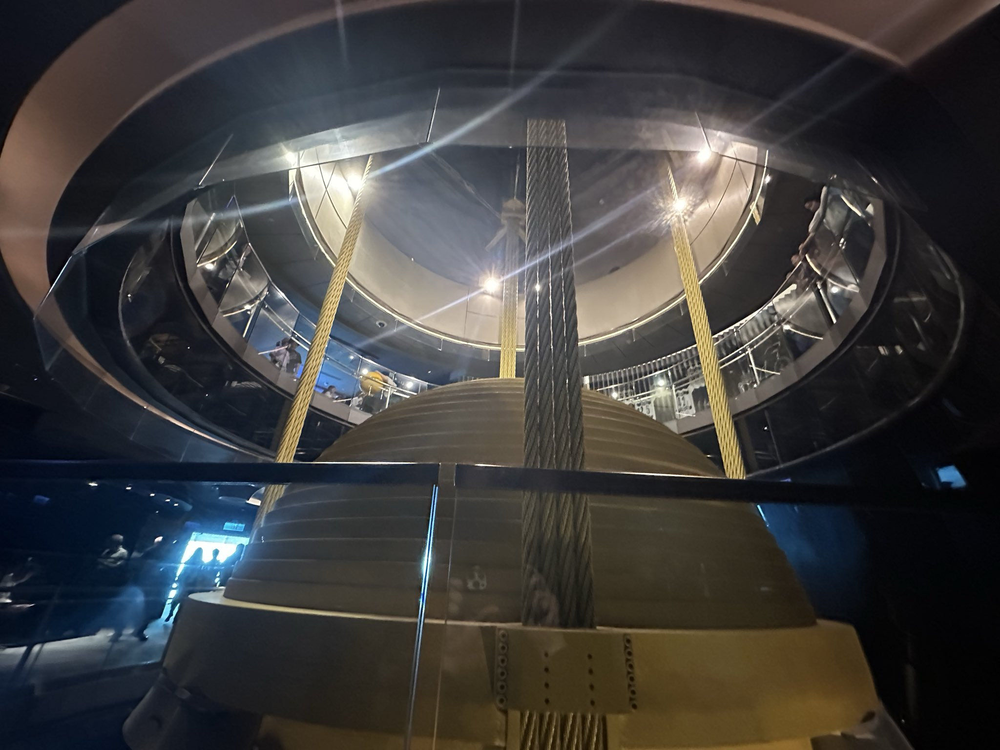
チューンドマスダンパーというものがあり、これがでかい+高いのでかなりの恐怖を感じる。 ワイヤーもぶっといので、「こんなの今切れてぶつかったら私はミンチどころか赤い霧に変わるな……」などと軽口を……（縁起でもないよ）
おそるおそる覗き込むと、下が真っ黒で何も見えない……落ちたら死どころか死体回収不能なのでは！？ （と思いきや帰り際に見ると実はスラブはちゃんとあって、黒くて見えないだけでした……w） こんなでかいもの、どうやって吊り上げるのだろう？ 最初は「言うて注水とかじゃないのかしら」と思ってたけど、どうも金属を何層かにしているもののようだ……。
トロピカルティーを飲んだり、おみやげに色々買ったり、AI画像作成のための写真を撮ったり（笑）していたら、また足が痛くなってきた。 うぐぐぐ。観光地によくある、「代替硬貨を伸ばして記念コインにするやつ（スーベニアメダルというらしい）」を友人が買うので、 それ用の機械をぐりぐり舵を回して製麺機みたいに伸ばそうとするのだが、友人は腰が終わり込んでいるため、こちらで回す。何やってんだァ！ 私も足腰がそろそろ……ヒィヒィ。
降りると89階。
{kind=link}
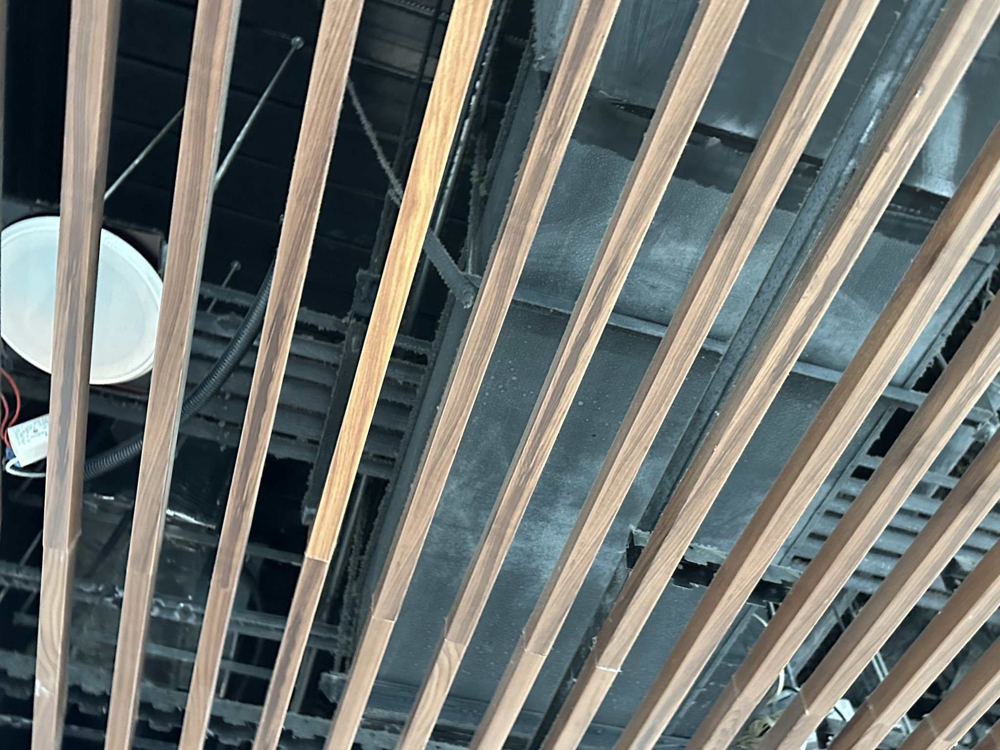
こちらは天井材が張っておらず、ガス管、水道管、電気用の可撓管、通気ダクトなどが見える。
楽しくて写真パシャパシャ。チューンドマスダンパーもまた見ることができたので、ベンチに座りつつ観察。
{kind=link}
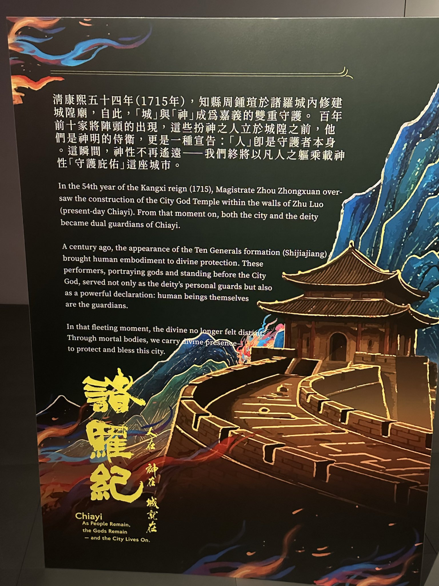
エレベータを降りると、《諸羅紀: 人在、神在、城就在》なるものがやっている……。台中の嘉儀市ゆかりの展示のようだ。
{kind=link}
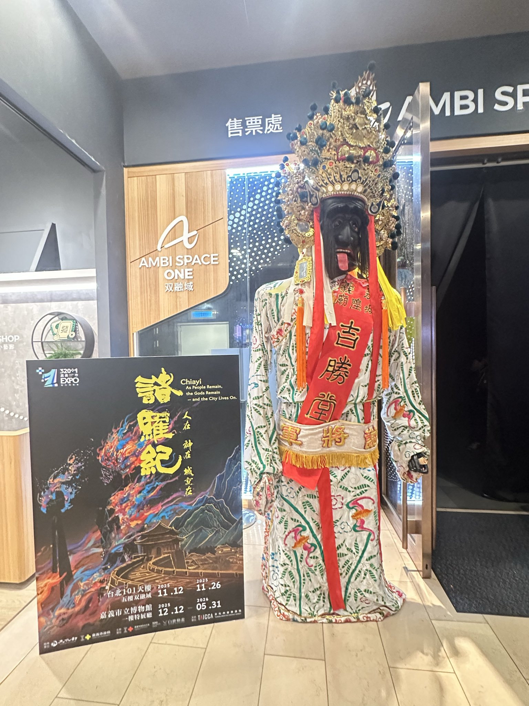
入り口の像が「顔の黒い、べろりと舌を出したもの」だった。無常とかあのあたり？ 無料とのことで入らせてもらう。
{kind=link}
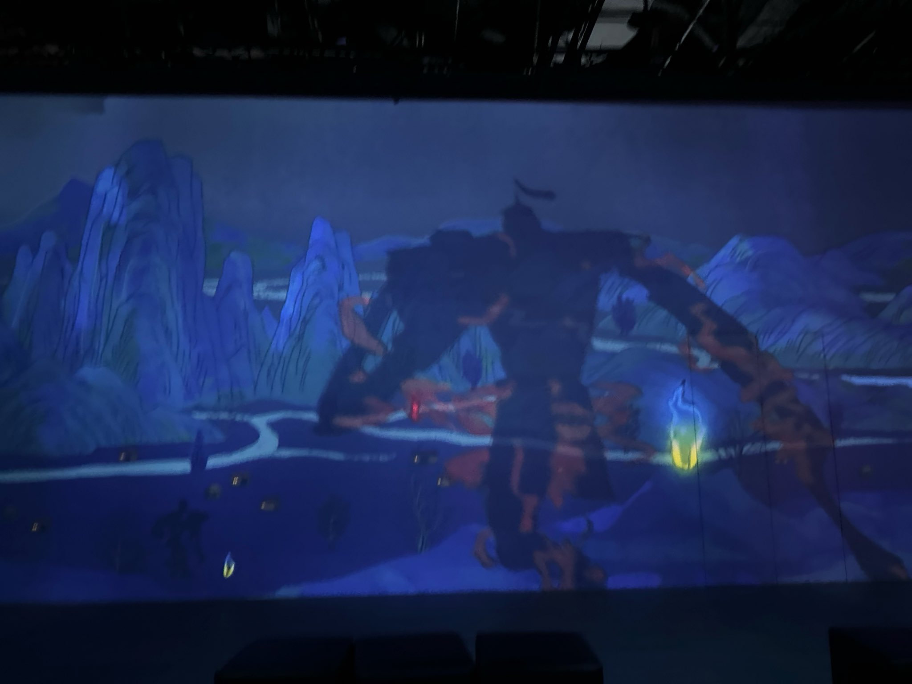
3Dというか、壁面床面を使った投影アニメーションのようなもの。「なんとなく神代、色んなものがいて、色んな人が現れて、人の世ができていく……」みたいな話。 風景自体は部屋一周でしっかり辻褄が合っている一方、壁面を移動している船が角で消えて、次の角で現れるなどのちょっとメタっぽい表現もあり興味深い。
一巡したし、足も休まったので席を立つ。奥にギャラリーもある。見てみると、(友人によると)どうも台中にある嘉義市のお祭りの映像などが。 あと、「異様な速さで街並みが変化していく3D街頭ムービー」などもあり、これはもしかしたらStable Diffusionとかかもしれない。
{kind=link}
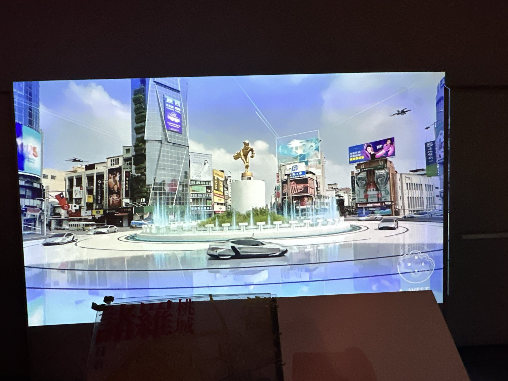
そういえば、街中でもAIイラストを見ることが多かった。友人（AIに好意的）による台湾AIイラスト事情解説はというと、 「イラストレーターからはあまり歓迎されていない一方、産業部門ではよく活用されている」とのことであり、そういうところもやっぱり日本と似てるのかも……。
撮影して回っていると、展示に関わる女性から声をかけられた。「我們是日本人」と答えると、翻訳アプリでいろいろと教えてくれた。 どうも、「神様の使いたちが、鬼を払う話」らしい。「彼らは神に扮しているとき、化粧をする。化粧をしたら喋ってはならない。喋ると、人間だとバレるから」なのだとか。 神は言葉を発さないということか、それとも神の話す言葉はとても古いものだから(真言みたいな？)、人間の知る言葉はどれも神の言葉とは異なるということだろうか？
なんと「服があるので着てみてください！」とのことで、着つけていただいてしまった。まさか台北101に来て昇神してしまうとは思わなかった……(！？) すごく楽しかったです。チップの箱が出してあったので、友人と二人で100NTDと、「ジャパニーズイェン、オーケー？」と聞いて「OK!」とのことなので1000円札を入れてみた。 お手間をおかけしますね……💦
その後、4階の歩廊から台湾世界貿易センターの入り口まで見てみたり、台北市議会とかを見たりしつつ、MRTに乗り込む。時間はもう17時近くて、帰宅ラッシュ……！
乗り換えてあと一駅、と思ったのだけど、あまりに混んでいるので、普通にそこから歩くことにする。 台北科技大と高速道路高架の間を縫うように休み休み歩く。
{kind=link}
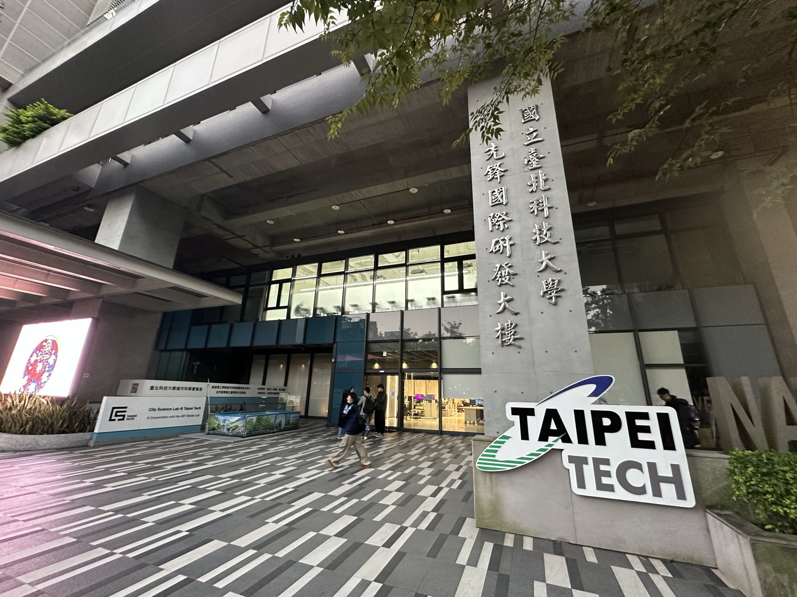
17:40くらいにホテル到着。ここまでで14700歩ほど。着くと、やっぱいてぇわ足……！ またテレビ。パウパトロールズ、ぴちぴちピッチ、メルモでポン、DORAなどをやっている。適当に流し見。 ぴちぴちピッチって正体明かすと泡になるんか……人魚だもんな。
台北4日目：帰国
前日の夕食はコンビニとかでいいかということでコンビニ飯にしたのだった。 スパイシーな砂肝ということで買ってみたら、沙茶入りとのことでお茶フレーバー。しかも甘め。 台湾では辛い物は大体甘くもある。暖かい地方だからなのかな？ガイドさんの台北→桃園間の道についての「台湾はハトレースが盛ん。人はお金を、ハトは命を懸ける。あれもハト小屋、これもハト小屋」という話を聞いて笑ったりしながら、空港へ移動。 ここで手荷物検査で、迪化街で買った瓶詰めが引っかかる。後で調べて分かったことなのだが、国際便の場合は特に液体の扱いにうるさいようだ。
「Is this sauce？」
「……ソー、ス……？」
そ……そっすか？（死） じゃのうて……止められたからには仕方なし、不承不承頷き、甘んじて没収される。まさかここでアイテムロストとは……がっくり。 せめて美味しく食べてくれ！ マジで！ でないとソースが浮かばれん……（業務上横領になるので無理です。お前が悪い。命にも作った人にも申し訳ない……）。
瓶の中には液体よりも固体の方が多かったと思うんですけど、これでソースなんですね……。 わかりやすい指標として、「チューブ歯磨き粉はジェルだから液体」「キムチは傾けると流れるから液体」というものがあるようです。
皆さん、国際便搭乗時は、少しでも汁気のあるお土産は、マジで絶対に預け荷物にしてください（一敗）
{kind=link}
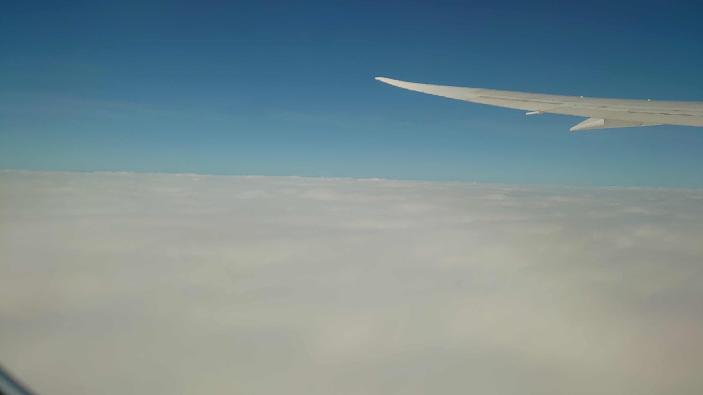
機内ではもう体力の限界である。Dropboxでオフライン利用可能にしたつもりの音楽はまだ落とせてなくて聞けてなかったし……。 「ブギーポップは笑わない」とか「裏世界ピクニック（漫画版）」とかをちょっと読みながらいつの間にか眠りに落ちる。 なんだかんだでむちゃくちゃ楽しかったぜ、台湾……。また行きたいなあ。
{kind=link}
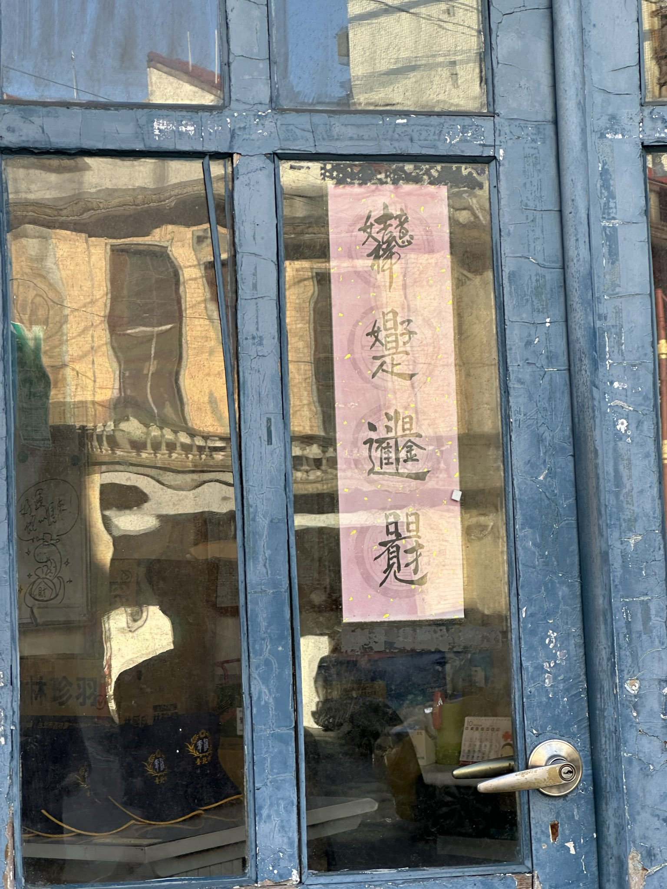
{kind=link}
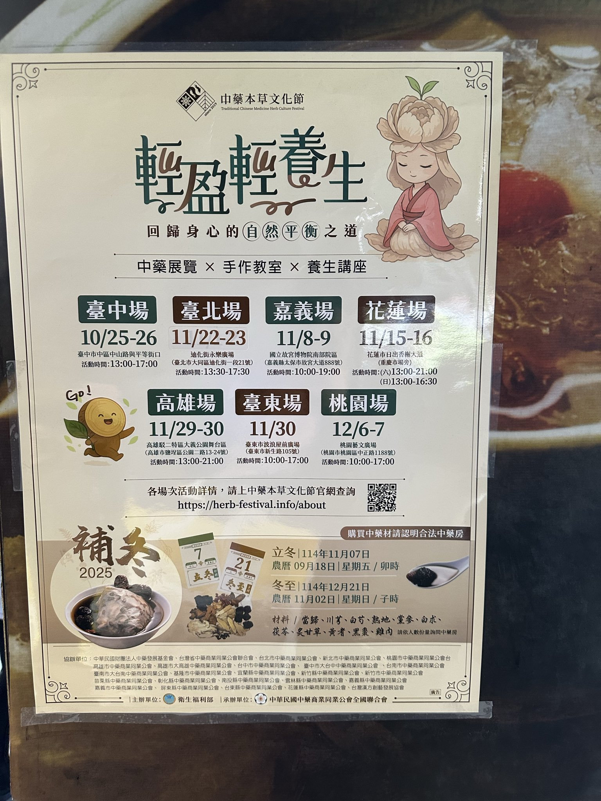
{kind=link}
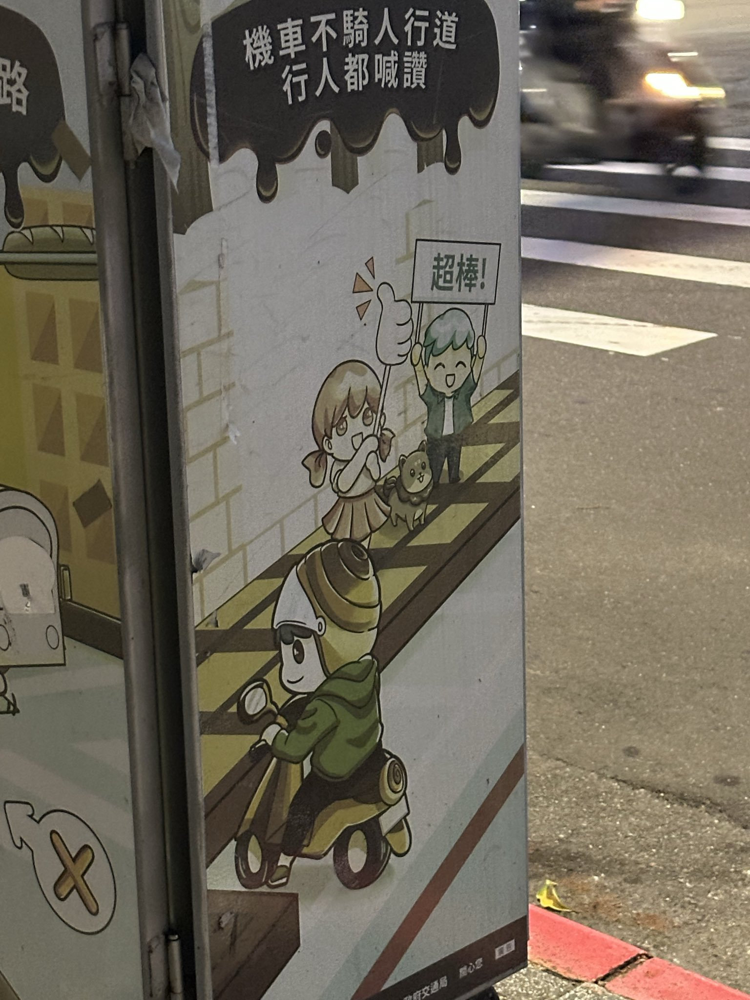
見かけたかわいいものたち
2025年11月17日
近況
音楽ページを作っています。まだ途中ですが……。InternetArchiveで目にした「Webamp」が超ナツカシ＋便利なので導入してみました。せっかくなので単純にMIDIをアップするのではなくリメイクしちゃえと思ってやってみているのですが、その……思ったより面倒くさい（ｗ まあ、さくさく音楽作業する再訓練になっていいのかもしれませんが……（あと普通にミキシングの練習になる）お耳がお暇でしたら、何曲かどうぞ。
"♪Ananas"
"♪神聖な場所"
"♪彼女の記憶"
"♪Rainy Circle"
あとなんとなくかずのこちゃんをば。

ではまた……。
2025年11月7日
近況
- 癌ドックと人間ドック終了。仕事がたまっているので頑張る。
- 年末調整について考えておかなきゃならない。
2025年11月5日
近況
- ちょっと横になっている間に激しく首を寝違えて、ちょっと回すだけで割とエグい寄りの痛みが走る。
- がっちり目に微分音のコラムを書いてみていた。近々更新されるかも、されないかも。
- 友人との台湾旅行を予定しているのだけど、実はここのところ忙しくて若干体力が底を尽いている感がある。 三連休ほとんど動かなかったのに……。
- 「ちょっと暇を作ろう」と思った時に限って忙しくなるのは、 ある種「暇してる奴には何かを振ってやれ」という信仰がスケール不変で作用する社会の基本原則と化しているせいで、 無意識領域まで影響しているせいなのではないか？ つまり我々は病気なのである。知らんけど。
- こまめに更新しようと思うとヘッダが長いのが鬱陶しく感じてきた。.cssファイルを分ける時が来たのではないか。
2025年10月30日
してたこと
またなんだか期間が明いちゃったニャン。Grok君の動画生成（特にエロ）がすごいねー！ と思ったんだけど、最近は超モデレートされるので割と萎えている。 それはそれとしてプールルームっぽい動画を作らせたりするのは楽しく、どこかに出すわけでもないのだがとりあえず一人で見て楽しんでいる。 （特にしばりを設けてるわけでもないけどいちおう）健全なものをシェアします。かがくのちからってすげ～。


ギャラリー部屋に置いているものから。

pixivに置いている画像から動画生成→スクショ→動画生成……を何回か繰り返したもの。勝手にマップが出来ていく。 水の表現が良い感じで、流体シミュレーションとかより3Dモデル＋AI描画の方が実用的になったりするのかなーなどと（全く詳しくもないことへの）思いを馳せてしまった。 しかしどうでもいいけど段差の多いところを走り回るのはあぶない。
それはそれとしてモデレートされるのはまあ気に食わないので、ComfyUIからの Wan2.2、それと Qwen-Image-Edit-2509 を触れるようにむしろデスクトップPCを買い替えるのもいいのかな～とも思ってたんだけど、 現行PCがDTMとかする分にはまだぜんぜん過不足なくって、それを「名目サブ機、実質持て余し」みたいにするのも痛ましいので、 それよりも先にDTMやったり、勢い任せに途中まで書いて放置してる微分音周りのコラムをまとめた方がいいよねって……。 てゆーかローカルで動かすことを度外視するなら、来年あたりとかにNovelAIあたりが普通に対応してそうな気もする。
とにかくMax9を触らなくてはという気持ちだ。SunoAIがパートごとにステムできたりと色んなことが出来るっぽいので、色々試したい。 Melodyne、Ableton Live、Omnisphere3を買うかな～という感じ。作曲とかペンシルパズルとかやりつつ、Leanとか知ってたらカッコイイだろうな～……みたいな余生になるんじゃないかと想像しています。たぶん一生ワナビ
作曲
"♪20251024.mp3"気のない名前で恐縮ですが、一応かるーくReaperを触りました。 エレキギターの音をさぐりつつ、フュージョンっぽい何某……（ならもうちょっとキメとかあるべきだよね）
"♪20251024_Cover1.mp3"
"♪20251024_Cover2.mp3"
SunoAIに投げ込んだもの。かるーく触っただけのものにも、すごいクオリティのアレンジ、創意工夫と活力を与えてくれる。 こういうのを自分でやらなきゃならないんじゃないのかとは思うものの、正直自分の今の能力と気力ではここまでは……💦（ｗ
ただn平均律とかには当然ながら対応しないので、この辺りのことをMelodyneやらMaxやらで少し考えてみたくなりつつある。 5年後くらいには何か結果が出るかも？（遠いよ）というわけでとりあえずMax for Live目当てでAbleton Live買いのつもりです～。
2025年10月13日
してたこと
一か月近く書いていなかった。Obsidianにもあまり触っていなかったので、何していたかな……。そうだ、オフはひたすらアニメを見ていた。 シュタゲ全部、 ダンダダンの放送済み分、 ゴールデンカムイの放送済み分と、 進撃の巨人全部。 進撃の巨人以外は多媒体で触れていたので筋は知っていて、進撃だけ新規で触れた。と言ってもシーズン3から見てなかったというだけだが……。
進撃の巨人は元々面白い話だな～と思っていたけど、実際続きを見てみると、「まだ加速するの！？」というくらいストーリーの筋がどんどん加速していくところがいい。 生活の都合上、放送当時はアニメを見られる環境になかったのだがずっと気になってはいて、ちょっと生活の忙しさが空いたので見てみたらまあ面白いこと。 オチの落としどころも良かった。考察要素もいっぱいあるみたいなので、世のファンに倣って考察動画でも流し見してみようと思う。
どのキャラも好きなのだが、全編通して特に「いい」と思ったのはミカサとハンジとジークだ。 ミカサというキャラクターはちょっと自分が高校生のころ書いていたキャラクターの一人と精神的に近いところがある（多分キノあたりが影響元だと思う）、強さの原点に湿度があるのだ。 ハンジはとにかく面白いのに締めるところはきっちり締めてくるところが格好良くて良い。段々と辛い「順番」を背負わざるを得なくなっていくのだが、それをしっかりとやり遂げる。 ジークは……問題意識は深刻なくせに言動が一言二言余計なやつ（笑）で、何だか見ていてちょっと愛おしいところがある。 出自の重さもそうだが元々「現状に対して何か疑問がある、つい何か言いたくなる」みたいなタイプで、しかもそれが思いやりから発している、というのが思想の出処でもあり、萌え所かもしれない。そこが上手くかみ合っている感じだ。 キャラクターの魅力には色んなものがあるが、自分の場合、「感情の重さ」と「知的な開放性」を書かれると、グッとキャラクターを好きになってしまうことが多い。 もちろん「進撃」のキャラクターにおいて、挙げた三人以外にも、この二つの要素は大きく見られる。
それと、「ドンキーコングバナンザ」とか 「FFタクティクス - イヴァリース・クロニクル - 」なども発売されている。 特にFFTは「ファミ通で読んで当時欲しかったけど買ってもらえず、時間が経ってから遊んだ」ゲームなので、なんだか妙に執着してしまう。 つまり「積んでたコンテンツを崩している」時期だと思う。放っておいても「未視聴コンテンツ」をどんどん積み上げてしまうタイプなので、ちょっとほっとしている。 そういえばSound Horizonの「聖戦と死神」にはやたらFFTみがあるなと思ってたけど、もともと獅子戦争自体が薔薇戦争モチーフなので、元ネタを同じくしているのである。 FFTは「FF＋ベルセルク＋薔薇の名前＋妹」だと思っており、この妹概念が「ダンジョン飯」に継承されたり、 あるいは「毛皮骨肉店」といったあんまりな要素を古典的ローグライクによって再解釈しつつ「S県月宮」と悪魔合体して「Elona」になるのである……というちょっと電波交じりの系譜図が頭の中にある（笑） 自分の中で少女というものが重要な位置を占め始めたのはおそらくFF4のリディア、 あるいは「金田一少年の事件簿」の班目るりちゃんなのだが、 では妹は？ と言われると、案外マジでFFTかもしれない。妹っていいよね（あとはまあ、自分の場合、生育環境とか神経学的特性とか、まあ色々あるんだと思う）。 ダンジョン飯を通して描かれた「妹」について何かめちゃくちゃ感じるところがあったために今ホームページを持っている、というのもある。ある種のミューズなのだろう。
勉強についてなのだが、CPUとか型についてまたちょっとだけ勉強していた。 CPUについては先月も書いていた「ポケモンのバグ」から、「Z80ってどう動いてるの？」 みたいな方向がちょっと気になって勉強しているというのと、 型については名詞は
Noun :: Entity -> Bool とか、命題は
Prop :: World -> Bool とか、 じゃあ Entity とか
World の中身については構造体で見ていきますかとか、
World
を導入すると今度は様相が気になってくるよね、到達可能性は
Accessible :: World -> World -> Bool なんだねとか、
「数学的には存在可能なのに現世界から到達不可能な状態って気にならない？」とか（この辺『チョコかバニラか？』（ジェイソン・シガ著）でちらっと触れてた気もする）、
比喩についてはモナドが使えるんじゃないのとかそういう……。
昔からどうも関数に執着するところがあり（自分そんなんばっかりだな）、しかしプログラミングについては環境を構築できなかったため触らずに来たのだが、
ここに来てLLMがすごく勉強の助けになっている。しかし何かを書くわけではないので、世間的に見れば、まったく生産性が低い。何がしたいのやら＞自分そうそう、弟が入籍し、妹も入籍の方向性で決まった模様。あまりにもめでたい。 手入れの行き届いていない現実世界のアバターで会うのがちょっと申し訳ないのだが、仕方がないか。 全身のアトピーがちょっと良くなったのでまあ少し良いとも言える。 あすけんの女に放置プレイをぶちかましていることについては言い訳の余地はない（食べるのが好きすぎるのよ）